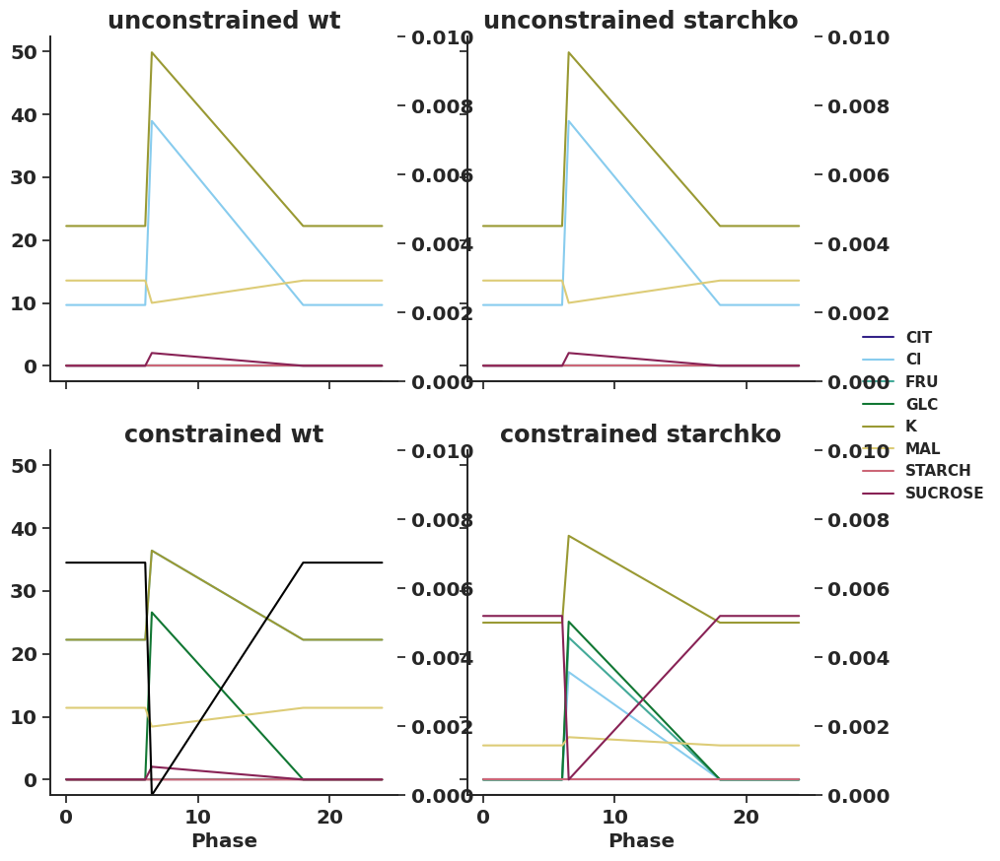

import itertools
import os
import re
import string
import xml.etree.ElementTree as ET
import cobra
import matplotlib as mpl
import matplotlib.patches as mpatches
import matplotlib.pyplot as plt
import numpy as np
import pandas as pd
import seaborn as sns
from IPython.display import SVG
from matplotlib.ticker import MultipleLocator
from mmon_gcm.analysing import get_escher_map
from mmon_gcm.supermodel import SuperModelAnalysing solutions
Setup
sns.set_theme()
sns.set_style("ticks")
sns.set_palette(
sns.color_palette(
[
"#332288",
"#88CCEE",
"#44AA99",
"#117733",
"#999933",
"#DDCC77",
"#CC6677",
"#882255",
"#AA4499",
]
)
)
colours = sns.color_palette()
params = {
"xtick.labelsize": "large",
"ytick.labelsize": "large",
"axes.labelsize": "large",
"axes.titlesize": "x-large",
"axes.labelweight": "bold",
"axes.titleweight": "bold",
"font.weight": "bold",
"axes.spines.right": False,
"axes.spines.top": False,
"legend.frameon": False,
}
plt.rcParams.update(params)def get_multiphase_fluxes(df, reaction):
reaction_phased = [f"{reaction}_{i+1}" for i in range(4)]
selected_df = df.loc[reaction_phased, "fluxes"]
return selected_dfdef convert_phases_to_times(df, phase_times=[6, 6.5, 18, 24]):
df.index = pd.MultiIndex.from_tuples(
[(row[0], phase_times[row[1] - 1]) for row in df.index], names=df.index.names
)
df = df.reorder_levels(["Phase", "Reaction"]).sort_index()
df = df.append(pd.concat([df.loc[24]], keys=[0]))
df = df.sort_index()
df = df.reorder_levels(["Reaction", "Phase"]).sort_index()
return dfdef select_volume_based_on_id(reaction_id, SuperModel):
total_gc_volume = SuperModel.get_volumes(per_guard_cell=False)
if "total" in reaction_id:
phase_volumes = total_gc_volume = SuperModel.get_volumes(per_guard_cell=False)
elif "v_gc" in reaction_id:
phase_volumes = total_gc_volume = (
SuperModel.get_volumes(per_guard_cell=False) * SuperModel.Vac_frac
)
elif "c_gc" in reaction_id:
phase_volumes = total_gc_volume = SuperModel.get_volumes(
per_guard_cell=False
) * (1 - SuperModel.Vac_frac)
elif "p_gc" in reaction_id:
phase_volumes = [1] * 4
else:
raise ValueError(f"Don't know how to deal with {reaction_id}")
return phase_volumesdef convert_to_conc(row, SuperModel, phases_in_df=[0, 6, 6.5, 18, 24]):
phase = row.name[1]
phase_conversion_dict = {
phases_in_df[0]: 4,
phases_in_df[1]: 1,
phases_in_df[2]: 2,
phases_in_df[3]: 3,
phases_in_df[4]: 4,
}
phase_volumes = select_volume_based_on_id(row.name[0], SuperModel)
volume_for_phase = phase_volumes[phase_conversion_dict[phase] - 1]
return row / volume_for_phasedef get_metabolite_df(
solutions_df, concentrations=True, total_mets=None, SuperModel=None
):
if total_mets == None:
total_mets = ["SUCROSE", "GLC", "MAL", "FRU", "K", "Cl", "CIT"]
total_mets_reactions = [met + "_total_pseudolinker" for met in total_mets] + [
"STARCH_p_gc_Linker"
]
total_mets_reactions_phased = [
f"{reaction}_{i+1}" for i in range(4) for reaction in total_mets_reactions
]
met_df = (solutions_df.loc[total_mets_reactions]).copy()
# change index to phase times instead of tags
met_df = convert_phases_to_times(met_df)
if concentrations == True:
met_df = met_df.apply(convert_to_conc, args=([SuperModel]), axis=1)
met_df = met_df.reorder_levels(["Phase", "Reaction"]).sort_index()
met_df.index = pd.MultiIndex.from_tuples(
[(index[0], index[1].split("_")[0]) for index in met_df.index],
names=met_df.index.names,
)
return met_dfdef get_closed_open_values(met_df_mm, light, atpase):
open_closed_dict = {}
for genotype in ["wt", "starchko"]:
open_closed_dict[genotype] = {}
open_closed_dict[genotype]["closed"] = met_df_mm.loc[
~(met_df_mm.index == (6, "STARCH"))
].loc[6, (light, atpase, genotype, "fluxes")]
open_closed_dict[genotype]["open"] = met_df_mm.loc[
~(met_df_mm.index == (6.5, "STARCH"))
].loc[6.5, (light, atpase, genotype, "fluxes")]
return open_closed_dictdef get_closed_open_values(met_df_mm, light, atpase):
open_closed_dict = {}
for genotype in ["wt", "starchko"]:
open_closed_dict[genotype] = {}
open_closed_dict[genotype]["closed"] = met_df_mm.loc[
6, (light, atpase, genotype, "fluxes")
]
open_closed_dict[genotype]["open"] = met_df_mm.loc[
6.5, (light, atpase, genotype, "fluxes")
]
return open_closed_dictdef get_totals_plot(specific_met_df):
colours = ["#999999ff", "#ff7043ff"]
mpl.rcParams["hatch.linewidth"] = 1.5
fig, axs = plt.subplots(1, 2, figsize=(10, 4), gridspec_kw={"width_ratios": [7, 1]})
closed_metabolite_df = specific_met_df.loc[6.0].drop("STARCH")
open_metabolite_df = specific_met_df.loc[6.5].drop("STARCH")
# plot wt
axs[0].bar(
np.array(range(len(closed_metabolite_df))) * 2 - 0.05,
closed_metabolite_df["wt"],
color=colours[0],
width=-0.3,
align="edge",
edgecolor=colours[0],
)
axs[0].bar(
np.array(range(len(open_metabolite_df))) * 2 + 0.05,
open_metabolite_df["wt"],
color=colours[1],
width=0.3,
align="edge",
edgecolor=colours[1],
)
axs[0].bar(
np.array(range(len(closed_metabolite_df))) * 2 + 1 - 0.05,
closed_metabolite_df["starchko"],
color=colours[0],
width=-0.3,
align="edge",
edgecolor="white",
hatch="//",
)
axs[0].bar(
np.array(range(len(closed_metabolite_df))) * 2 + 1 + 0.05,
open_metabolite_df["starchko"],
color=colours[1],
width=0.3,
align="edge",
edgecolor="white",
hatch="//",
)
axs[0].bar(
np.array(range(len(closed_metabolite_df))) * 2 + 1 - 0.05,
closed_metabolite_df["starchko"],
color="none",
width=-0.3,
align="edge",
edgecolor=colours[0],
)
axs[0].bar(
np.array(range(len(closed_metabolite_df))) * 2 + 1 + 0.05,
open_metabolite_df["starchko"],
color="none",
width=0.3,
align="edge",
edgecolor=colours[1],
)
x_ticks_pad = 12
axs[0].tick_params(axis="x", which="both", bottom=False, pad=x_ticks_pad)
axs[1].tick_params(axis="x", which="both", bottom=False, pad=x_ticks_pad)
starch_closed = specific_met_df.loc[(6.0, "STARCH")]
starch_open = specific_met_df.loc[(6.5, "STARCH")]
axs[1].bar(
-0.05,
starch_closed["wt"],
width=-0.3,
align="edge",
edgecolor=colours[0],
color=colours[0],
)
axs[1].bar(
0.05,
starch_open["wt"],
width=0.3,
align="edge",
edgecolor=colours[1],
color=colours[1],
)
axs[1].bar(
1 - 0.05,
starch_closed["starchko"],
width=-0.3,
align="edge",
edgecolor=colours[0],
color=colours[0],
hatch="//",
)
axs[1].bar(
1 + 0.05,
starch_open["starchko"],
width=0.3,
align="edge",
edgecolor=colours[1],
color=colours[1],
hatch="//",
)
main_x_tick_labels = [
name[0] + name[1:3].lower() for name in open_metabolite_df.index
]
main_x_tick_labels_superscripted = []
for label in main_x_tick_labels:
if label == "K":
new_label = r"K$^+$"
elif label == "Cl":
new_label = r"Cl$^-$"
else:
new_label = label
main_x_tick_labels_superscripted.append(new_label)
main_x_tick_labels = main_x_tick_labels_superscripted
main_x_ticks = np.array(range(len(closed_metabolite_df))) * 2 + 0.5
ax0_y_max = 60
axs[0].set_xticks(main_x_ticks)
axs[0].set_xticklabels(main_x_tick_labels)
axs[0].set_ylim(-0.1, ax0_y_max)
axs[0].set_xlim(-0.5, 13.5)
axs[0].set_ylabel(r"Osmolyte concentration (mM)")
axs[0].yaxis.set_major_locator(MultipleLocator(10))
# axs[0].yaxis.set_minor_locator(AutoMinorLocator(2))
for x_loc in [(x - 1) * 2 + 1.5 for x in range(len(closed_metabolite_df))]:
axs[0].hlines(
-3.7, x_loc + 0.1, x_loc + 1.9, clip_on=False, color="black", alpha=0.9
)
for offset, label in zip([0.5, 1.5], ["WT", "KO"]):
axs[0].text(
x_loc + offset, -2, label, ha="center", va="center", size="small"
)
starch_x_tick_labels = ["Starch"]
starch_x_ticks = [0.5]
ax1_y_max = 14
axs[1].set_xticks(starch_x_ticks)
axs[1].set_xticklabels(starch_x_tick_labels)
axs[1].set_ylim(-0.1 * ax1_y_max / ax0_y_max, ax1_y_max)
axs[1].yaxis.set_label_position("right")
axs[1].yaxis.tick_right()
axs[1].yaxis.set_major_locator(MultipleLocator(2))
# axs[1].yaxis.set_minor_locator(AutoMinorLocator(2))
axs[1].spines["right"].set_visible(True)
axs[1].spines["left"].set_visible(False)
axs[1].set_ylabel(r"Amount (fmol$\cdot$GC$^{-1}$)")
for x_loc in [(x - 1) * 2 + 1.5 for x in [0]]:
axs[1].hlines(
-3.7 * ax1_y_max / ax0_y_max,
x_loc + 0.1,
x_loc + 2,
clip_on=False,
color="black",
alpha=0.9,
)
for offset, label in zip([0.5, 1.5], ["WT", "KO"]):
axs[1].text(
x_loc + offset,
-2 * ax1_y_max / ax0_y_max,
label,
ha="center",
va="center",
size="small",
)
colors = {"EoN": "#999999ff", "30 mins": "#ff7043ff"}
labels = list(colors.keys())
handles = [plt.Rectangle((0, 0), 1, 1, color=colors[label]) for label in labels]
# plt.legend(handles, labels)
plt.subplots_adjust(wspace=0.05)
return figdef getgcdiagram(
modeldf,
modelname,
condition_label,
genotype_label,
scale_height,
minimal=True,
flipped=False,
display_svg=True,
debug=False,
brokenaxis=False,
aspser=False,
save_png=True,
):
if minimal == True:
if aspser == True:
tree = ET.parse("../inputs/fluxmap_template_aspserminimal.svg")
root = tree.getroot
else:
tree = ET.parse("../inputs/fluxmap_template_minimal.svg")
root = tree.getroot
else:
tree = ET.parse("../inputs/fluxmap_template.svg")
root = updatetextnames(tree, condition_label, genotype_label, debug=debug)
# get the background and the flipped background, and set the opacity of the wrong one to 0
background = getelement(
tree,
condition_label=condition_label,
genotype_label=genotype_label,
compartment_label="Background",
debug=debug,
)
background_flipped = getelement(
tree,
condition_label=condition_label,
genotype_label=genotype_label,
compartment_label="Background_flipped",
debug=debug,
)
if flipped == True:
updateelementopacity(background, 0)
updateelementopacity(background_flipped, 1)
else:
updateelementopacity(background, 1)
updateelementopacity(background_flipped, 0)
if minimal is not True:
# get the scale bar, either keep the hatched or don't, and set the height to the scale conc specified
for phase_label in ["EoN", "30", "EoN_hatched", "30_hatched"]:
scale_bar_element = getelement(
tree,
condition_label=condition_label,
genotype_label=genotype_label,
compartment_label="other",
metabolite_label="scale",
phase_label=phase_label,
debug=debug,
)
if "hatched" in phase_label:
updateelementopacity(scale_bar_element, int(flipped))
else:
updateelementopacity(scale_bar_element, int(not flipped))
updateelementheight(scale_bar_element, scale_height)
for row in modeldf.iterrows():
compartment_label = row[0][1]
metabolite_label = row[0][0]
if debug == True:
print(row[0], row[1])
try:
eon_element = getelement(
tree,
condition_label=condition_label,
genotype_label=genotype_label,
compartment_label=compartment_label,
metabolite_label=metabolite_label,
phase_label="EoN",
debug=debug,
)
thirty_element = getelement(
tree,
condition_label=condition_label,
genotype_label=genotype_label,
compartment_label=compartment_label,
metabolite_label=metabolite_label,
phase_label="30",
debug=debug,
)
eon_element_hatched = getelement(
tree,
condition_label=condition_label,
genotype_label=genotype_label,
compartment_label=compartment_label,
metabolite_label=metabolite_label,
phase_label="EoN_hatched",
debug=debug,
)
thirty_element_hatched = getelement(
tree,
condition_label=condition_label,
genotype_label=genotype_label,
compartment_label=compartment_label,
metabolite_label=metabolite_label,
phase_label="30_hatched",
debug=debug,
)
if flipped == True:
updateelementopacity(eon_element, 0)
updateelementopacity(eon_element_hatched, 1)
updateelementopacity(thirty_element, 0)
updateelementopacity(thirty_element_hatched, 1)
else:
updateelementopacity(eon_element, 1)
updateelementopacity(eon_element_hatched, 0)
updateelementopacity(thirty_element, 1)
updateelementopacity(thirty_element_hatched, 0)
if row[1]["EoN"] <= 0.0001:
updateelementheight(eon_element, 0.5)
updateelementheight(eon_element_hatched, 0.5)
else:
updateelementheight(eon_element, row[1]["EoN"])
updateelementheight(eon_element_hatched, row[1]["EoN"])
if row[1]["30 mins"] <= 0.0001:
updateelementheight(thirty_element, 0.5)
updateelementheight(thirty_element_hatched, 0.5)
else:
updateelementheight(thirty_element, row[1]["30 mins"])
updateelementheight(thirty_element_hatched, row[1]["30 mins"])
except AttributeError:
print(f"{row[0]} not in template")
svgpath = f"../outputs/flux_maps/{modelname}.svg"
tree.write(svgpath, encoding="UTF-8", xml_declaration=True)
if display_svg == True:
display(SVG(svgpath))
return svgpath
def getelement(
tree,
condition_label,
genotype_label=None,
compartment_label=None,
metabolite_label=None,
phase_label=None,
debug=False,
):
if debug == True:
print(
"Trying: ",
condition_label,
genotype_label,
compartment_label,
metabolite_label,
phase_label,
)
root = tree.getroot()
if debug == True:
print("Got root", end=" ")
for condition in root.findall("{http://www.w3.org/2000/svg}g"):
if (
condition.get("{http://www.inkscape.org/namespaces/inkscape}label")
== "condition"
):
if debug == True:
print(condition_label, end=" ")
if genotype_label == None:
return conditon
else:
for genotype in condition:
if (
genotype.get(
"{http://www.inkscape.org/namespaces/inkscape}label"
)
== "genotype"
):
if debug == True:
print(genotype_label, end=" ")
if compartment_label == None:
return genotype
else:
for compartment in genotype:
if (
compartment.get(
"{http://www.inkscape.org/namespaces/inkscape}label"
)
== compartment_label
):
if debug == True:
print(compartment_label, end=" ")
if metabolite_label == None:
return compartment
else:
for metabolite in compartment:
if (
metabolite.get(
"{http://www.inkscape.org/namespaces/inkscape}label"
)
== metabolite_label
):
if debug == True:
print(metabolite_label, end=" ")
if phase_label == None:
return metabolite
else:
for phase in metabolite:
if (
phase.get(
"{http://www.inkscape.org/namespaces/inkscape}label"
)
== phase_label
):
return phase
def updateelementopacity(element, opacity):
style_attribs = element.attrib["style"].split(";")
for i, style in enumerate(style_attribs):
if re.match(r"^opacity", style):
del style_attribs[i]
style_attribs.append("opacity:" + str(opacity))
element.attrib["style"] = ";".join(style_attribs)
return element
def updateelementheight(element, height):
try:
element.attrib["height"]
element.attrib["height"] = str(height)
except:
element.attrib["d"] = (
element.attrib["d"].split("v")[0]
+ "v -"
+ str(height)
+ " h"
+ element.attrib["d"].split("h")[1]
)
return element
def updatetextnames(tree, condition_label, genotype_label, debug=False):
root = tree.getroot()
for condition in root.findall("{http://www.w3.org/2000/svg}g"):
if (
condition.get("{http://www.inkscape.org/namespaces/inkscape}label")
== "condition"
):
for genotype in condition:
if (
genotype.get("{http://www.inkscape.org/namespaces/inkscape}label")
== "condition_name"
):
for tspan in genotype:
tspan.text = condition_label
if debug == True:
print("Condition label changed to " + tspan.text)
elif (
genotype.get("{http://www.inkscape.org/namespaces/inkscape}label")
== "genotype"
):
for compartment in genotype:
if (
compartment.get(
"{http://www.inkscape.org/namespaces/inkscape}label"
)
== "genotype_name"
):
for tspan in compartment:
tspan.text = genotype_label
if debug == True:
print("Genotype label changed to " + tspan.text)
return rootparameters_df = pd.read_csv("../inputs/arabidopsis_parameters.csv", index_col=0)
four_stage_GC_model = cobra.io.sbml.read_sbml_model(
"../models/4_stage_GC.xml"
) # read model
arabidopsis_supermodel = SuperModel(
parameters_df.loc[:, "Value"], fba_model=four_stage_GC_model
);No objective coefficients in model. Unclear what should be optimized
/home/nls119/src/mmon-gcm2/mmon_gcm/supermodel.py:25: FutureWarning: iteritems is deprecated and will be removed in a future version. Use .items instead.
for parameter, value in parameters.iteritems():Import solutions and set up dataframes
solutions_dict = {
file[:-4]: pd.read_csv(f"../outputs/model_solutions/{file}", index_col=0)
for file in os.listdir("../outputs/model_solutions")
if file.endswith(".csv")
}Check we’re in a good range for the solver
maxes = {}
mins = {}
for name, solution in solutions_dict.items():
maxes[name] = abs(solution.loc[:, "fluxes"]).max()
mins[name] = abs(
solution.loc[:, "fluxes"][abs(solution.loc[:, "fluxes"]) > 10**-8]
).min()mins{'blue_constrained_starchko': 1.5247677265731132e-05,
'blue_unconstrained_wt': 2.517235510636032e-07,
'white_constrained_wt': 3.27322847631833e-05,
'nops_unconstrained_wt': 0.0001811893409185,
'nops_constrained_wt': 2.1471018822492425e-05,
'nops_constrained_starchko': 3.72070755724131e-05,
'blue_constrained_wt': 2.334144094270074e-05,
'white_constrained_starchko': 4.4613154721834365e-05,
'white_unconstrained_starchko': 3.898122362004467e-05,
'white_unconstrained_wt': 3.898124962407721e-05,
'blue_unconstrained_starchko': 1.5552293266882112e-08,
'nops_unconstrained_starchko': 0.0001811893409177}abs(
solutions_dict["blue_unconstrained_wt"].loc[:, "fluxes"][
abs(solutions_dict["blue_unconstrained_wt"].loc[:, "fluxes"]) > 10**-8
]
).sort_values()NITRATE_c_gc_Linker_2 2.517236e-07
NITRATE_c_gc_Linker_3 2.517236e-07
NITRATE_c_gc_Linker_4 2.517236e-07
NITRATE_c_gc_Linker_1 2.517236e-07
PEPCARBOX_RXN_c_gc_3 6.941965e-05
...
PLASTOQUINOL_PLASTOCYANIN_REDUCTASE_RXN_p_me_3 1.214771e+02
RXN490_3650_p_me_3 2.429542e+02
EX_X_Photon_t_me_3 4.859084e+02
Photon_tx_me_3 4.859084e+02
Photon_ep_me_3 4.859084e+02
Name: fluxes, Length: 981, dtype: float64abs(
solutions_dict["blue_unconstrained_starchko"].loc[:, "fluxes"][
abs(solutions_dict["blue_unconstrained_starchko"].loc[:, "fluxes"]) > 10**-8
]
).sort_values()NITRATE_c_gc_Linker_1 1.555229e-08
NITRATE_c_gc_Linker_2 1.555229e-08
NITRATE_c_gc_Linker_3 1.555229e-08
NITRATE_c_gc_Linker_4 1.555229e-08
2PGADEHYDRAT_RXN_p_gc_3 6.942203e-05
...
PLASTOQUINOL_PLASTOCYANIN_REDUCTASE_RXN_p_me_3 1.214771e+02
RXN490_3650_p_me_3 2.429542e+02
EX_X_Photon_t_me_3 4.859084e+02
Photon_tx_me_3 4.859084e+02
Photon_ep_me_3 4.859084e+02
Name: fluxes, Length: 979, dtype: float64With solver tolerance of 10-8 we treat any fluxes below that value as being effectively 0, and this doesn’t include any fluxes we’re interested in. They’re 10-5 and above, so there is a difference of three orders of magnitude.
conditions_permutations = [
["blue", "white", "nops"],
["unconstrained", "constrained"],
["wt", "starchko"],
["fluxes", "minimum", "maximum"],
]
solutions_df_columns = pd.MultiIndex.from_product(
conditions_permutations, names=["Light", "ATPase", "Starch", "Solution"]
)
solutions_df = pd.DataFrame(columns=solutions_df_columns)
conditions_list_of_lists = [
["blue", "white", "nops"],
["unconstrained", "constrained"],
["wt", "starchko"],
]
conditions_iterations = list(itertools.product(*conditions_list_of_lists))
cols_to_drop = []
for conditions in conditions_iterations:
light_condition, atpase_condition, starch_condition = conditions
file_name = f"../outputs/model_solutions/{light_condition}_{atpase_condition}_{starch_condition}.csv"
try:
condition_df = pd.read_csv(file_name, index_col=0)
for col in ["fluxes", "minimum", "maximum"]:
solutions_df.loc[
:, (light_condition, atpase_condition, starch_condition, col)
] = condition_df.loc[:, col]
except:
cols_to_drop.append(conditions)
print(f"File {file_name} doesn't exist, skipping")
solutions_df_unphased = solutions_df.copy()
index_phased = pd.MultiIndex.from_tuples(
[
(reaction[:-2], int(reaction[-1]))
if reaction[-1] in ["1", "2", "3", "4"]
else (reaction, None)
for reaction in solutions_df.index
],
names=["Reaction", "Phase"],
)
solutions_df.index = index_phased
solutions_df = solutions_df.drop(cols_to_drop, axis=1)/tmp/ipykernel_374830/2276567288.py:27: DeprecationWarning: In a future version, `df.iloc[:, i] = newvals` will attempt to set the values inplace instead of always setting a new array. To retain the old behavior, use either `df[df.columns[i]] = newvals` or, if columns are non-unique, `df.isetitem(i, newvals)`
solutions_df.loc[
/tmp/ipykernel_374830/2276567288.py:27: DeprecationWarning: In a future version, `df.iloc[:, i] = newvals` will attempt to set the values inplace instead of always setting a new array. To retain the old behavior, use either `df[df.columns[i]] = newvals` or, if columns are non-unique, `df.isetitem(i, newvals)`
solutions_df.loc[
/tmp/ipykernel_374830/2276567288.py:27: DeprecationWarning: In a future version, `df.iloc[:, i] = newvals` will attempt to set the values inplace instead of always setting a new array. To retain the old behavior, use either `df[df.columns[i]] = newvals` or, if columns are non-unique, `df.isetitem(i, newvals)`
solutions_df.loc[
/tmp/ipykernel_374830/2276567288.py:27: DeprecationWarning: In a future version, `df.iloc[:, i] = newvals` will attempt to set the values inplace instead of always setting a new array. To retain the old behavior, use either `df[df.columns[i]] = newvals` or, if columns are non-unique, `df.isetitem(i, newvals)`
solutions_df.loc[
/tmp/ipykernel_374830/2276567288.py:27: DeprecationWarning: In a future version, `df.iloc[:, i] = newvals` will attempt to set the values inplace instead of always setting a new array. To retain the old behavior, use either `df[df.columns[i]] = newvals` or, if columns are non-unique, `df.isetitem(i, newvals)`
solutions_df.loc[
/tmp/ipykernel_374830/2276567288.py:27: DeprecationWarning: In a future version, `df.iloc[:, i] = newvals` will attempt to set the values inplace instead of always setting a new array. To retain the old behavior, use either `df[df.columns[i]] = newvals` or, if columns are non-unique, `df.isetitem(i, newvals)`
solutions_df.loc[
/tmp/ipykernel_374830/2276567288.py:27: DeprecationWarning: In a future version, `df.iloc[:, i] = newvals` will attempt to set the values inplace instead of always setting a new array. To retain the old behavior, use either `df[df.columns[i]] = newvals` or, if columns are non-unique, `df.isetitem(i, newvals)`
solutions_df.loc[
/tmp/ipykernel_374830/2276567288.py:27: DeprecationWarning: In a future version, `df.iloc[:, i] = newvals` will attempt to set the values inplace instead of always setting a new array. To retain the old behavior, use either `df[df.columns[i]] = newvals` or, if columns are non-unique, `df.isetitem(i, newvals)`
solutions_df.loc[
/tmp/ipykernel_374830/2276567288.py:27: DeprecationWarning: In a future version, `df.iloc[:, i] = newvals` will attempt to set the values inplace instead of always setting a new array. To retain the old behavior, use either `df[df.columns[i]] = newvals` or, if columns are non-unique, `df.isetitem(i, newvals)`
solutions_df.loc[
/tmp/ipykernel_374830/2276567288.py:27: DeprecationWarning: In a future version, `df.iloc[:, i] = newvals` will attempt to set the values inplace instead of always setting a new array. To retain the old behavior, use either `df[df.columns[i]] = newvals` or, if columns are non-unique, `df.isetitem(i, newvals)`
solutions_df.loc[
/tmp/ipykernel_374830/2276567288.py:27: DeprecationWarning: In a future version, `df.iloc[:, i] = newvals` will attempt to set the values inplace instead of always setting a new array. To retain the old behavior, use either `df[df.columns[i]] = newvals` or, if columns are non-unique, `df.isetitem(i, newvals)`
solutions_df.loc[
/tmp/ipykernel_374830/2276567288.py:27: DeprecationWarning: In a future version, `df.iloc[:, i] = newvals` will attempt to set the values inplace instead of always setting a new array. To retain the old behavior, use either `df[df.columns[i]] = newvals` or, if columns are non-unique, `df.isetitem(i, newvals)`
solutions_df.loc[Plotting Linker fluxes
All gc osmolytes
def get_linkers_df(
solutions_df,
concentrations=True,
osmolytes_path="../inputs/osmolytes.csv",
SuperModel=None,
):
osmolytes = pd.read_csv(osmolytes_path, index_col=0)
gc_osmolytes = [os for os in osmolytes.index if os[-2:] == "gc"]
gc_osmolytes_linker_reactions = [os + "_Linker" for os in gc_osmolytes]
linkers_df = solutions_df.loc[gc_osmolytes_linker_reactions].copy()
linkers_df = convert_phases_to_times(linkers_df)
if concentrations == True:
linkers_df = linkers_df.apply(convert_to_conc, args=([SuperModel]), axis=1)
linkers_df = linkers_df.reorder_levels(["Phase", "Reaction"]).sort_index()
index_key = {"p": "Chloroplast", "v": "Vacuole", "c": "Cytoplasm"}
linkers_df.index = pd.MultiIndex.from_tuples(
[
(
index[0],
"_".join(index[1].split("_")[:-3]),
index_key[index[1].split("_")[-3]],
)
for index in linkers_df.index
],
names=linkers_df.index.names + ["Compartment"],
)
return linkers_dflinkers_df = get_linkers_df(solutions_df, SuperModel=arabidopsis_supermodel)/tmp/ipykernel_374830/978925231.py:7: FutureWarning: The frame.append method is deprecated and will be removed from pandas in a future version. Use pandas.concat instead.
df = df.append(pd.concat([df.loc[24]], keys=[0]))met_df_mm = get_metabolite_df(solutions_df, SuperModel=arabidopsis_supermodel)/tmp/ipykernel_374830/978925231.py:7: FutureWarning: The frame.append method is deprecated and will be removed from pandas in a future version. Use pandas.concat instead.
df = df.append(pd.concat([df.loc[24]], keys=[0]))ordered_index = []
for phase in [0.0, 6.0, 6.5, 18.0, 24.0]:
for met in ["K", "Cl", "SUCROSE", "GLC", "FRU", "MAL", "CIT", "STARCH"]:
ordered_index.append((phase, met))
pd.MultiIndex.from_tuples(ordered_index)
met_df_mm = met_df_mm.reindex(ordered_index)
met_df_mm| Light | blue | ... | nops | |||||||||||||||||||
|---|---|---|---|---|---|---|---|---|---|---|---|---|---|---|---|---|---|---|---|---|---|---|
| ATPase | unconstrained | constrained | ... | unconstrained | constrained | |||||||||||||||||
| Starch | wt | starchko | wt | starchko | ... | wt | starchko | wt | starchko | |||||||||||||
| Solution | fluxes | minimum | maximum | fluxes | minimum | maximum | fluxes | minimum | maximum | fluxes | ... | maximum | fluxes | minimum | maximum | fluxes | minimum | maximum | fluxes | minimum | maximum | |
| Phase | Reaction | |||||||||||||||||||||
| 0.0 | K | 2.223338e+01 | NaN | NaN | 2.223338e+01 | NaN | NaN | 2.223338e+01 | NaN | NaN | 2.223338e+01 | ... | NaN | 2.223338e+01 | NaN | NaN | 1.623558e+01 | NaN | NaN | 1.396758e+01 | NaN | NaN |
| Cl | 2.223223e+01 | NaN | NaN | 2.223331e+01 | NaN | NaN | 1.779201e+01 | NaN | NaN | 2.456769e-14 | ... | NaN | -3.212964e-12 | NaN | NaN | 0.000000e+00 | NaN | NaN | -2.404497e-15 | NaN | NaN | |
| SUCROSE | 8.531006e-12 | NaN | NaN | 0.000000e+00 | NaN | NaN | -1.588203e-11 | NaN | NaN | 3.203986e+01 | ... | NaN | 0.000000e+00 | NaN | NaN | 1.710048e+01 | NaN | NaN | 3.124427e+01 | NaN | NaN | |
| GLC | 0.000000e+00 | NaN | NaN | 0.000000e+00 | NaN | NaN | -8.322345e-12 | NaN | NaN | 0.000000e+00 | ... | NaN | -2.236757e-13 | NaN | NaN | 0.000000e+00 | NaN | NaN | 0.000000e+00 | NaN | NaN | |
| FRU | 0.000000e+00 | NaN | NaN | 0.000000e+00 | NaN | NaN | 0.000000e+00 | NaN | NaN | -1.034804e-06 | ... | NaN | 0.000000e+00 | NaN | NaN | -2.863518e-14 | NaN | NaN | -3.859590e-13 | NaN | NaN | |
| MAL | 2.414779e+01 | NaN | NaN | 2.414862e+01 | NaN | NaN | 8.119376e+00 | NaN | NaN | 5.303941e+00 | ... | NaN | 1.750039e-13 | NaN | NaN | 0.000000e+00 | NaN | NaN | 7.287615e+00 | NaN | NaN | |
| CIT | 1.007895e-12 | NaN | NaN | -1.094230e-13 | NaN | NaN | -1.576202e-12 | NaN | NaN | 3.284107e-16 | ... | NaN | 0.000000e+00 | NaN | NaN | 2.552446e+00 | NaN | NaN | 2.186282e+00 | NaN | NaN | |
| STARCH | 0.000000e+00 | NaN | NaN | 0.000000e+00 | NaN | NaN | 7.154663e-03 | NaN | NaN | 0.000000e+00 | ... | NaN | 0.000000e+00 | NaN | NaN | 2.976651e-03 | NaN | NaN | 0.000000e+00 | NaN | NaN | |
| 6.0 | K | 2.223338e+01 | 0.000000e+00 | 129.146199 | 2.223338e+01 | 5.364309e-16 | 129.146199 | 2.223338e+01 | 0.000000e+00 | 129.146199 | 2.223338e+01 | ... | 129.146199 | 2.223338e+01 | 0.0 | 129.146199 | 1.623558e+01 | 0.000000e+00 | 129.146199 | 1.396758e+01 | 0.000000e+00 | 124.337668 |
| Cl | 2.223223e+01 | 0.000000e+00 | 89.290671 | 2.223331e+01 | 0.000000e+00 | 89.290671 | 1.779201e+01 | 0.000000e+00 | 89.290671 | 2.456769e-14 | ... | 89.290671 | 0.000000e+00 | 0.0 | 89.290671 | 0.000000e+00 | 0.000000e+00 | 89.290671 | -2.404497e-15 | 6.793058e-26 | 80.389461 | |
| SUCROSE | 0.000000e+00 | 0.000000e+00 | 178.581341 | 0.000000e+00 | 0.000000e+00 | 178.581341 | 0.000000e+00 | 0.000000e+00 | 178.581341 | 3.203986e+01 | ... | 178.581341 | -1.634626e-14 | 0.0 | 178.581341 | 1.710048e+01 | 0.000000e+00 | 178.581341 | 3.124427e+01 | 0.000000e+00 | 178.581341 | |
| GLC | 0.000000e+00 | 0.000000e+00 | 178.581341 | 1.532076e-15 | 0.000000e+00 | 178.581341 | -8.322345e-12 | 0.000000e+00 | 178.581341 | 0.000000e+00 | ... | 178.581341 | 0.000000e+00 | 0.0 | 178.581341 | 0.000000e+00 | 0.000000e+00 | 178.581341 | 0.000000e+00 | 0.000000e+00 | 160.463896 | |
| FRU | 0.000000e+00 | 0.000000e+00 | 178.581341 | 0.000000e+00 | 0.000000e+00 | 178.581341 | 0.000000e+00 | 0.000000e+00 | 178.581341 | -1.034804e-06 | ... | 178.581341 | 0.000000e+00 | 0.0 | 178.581341 | 0.000000e+00 | 0.000000e+00 | 178.581341 | 0.000000e+00 | 0.000000e+00 | 160.463896 | |
| MAL | 2.414779e+01 | 0.000000e+00 | 64.494321 | 2.414862e+01 | 6.028235e-27 | 64.494321 | 8.119376e+00 | 0.000000e+00 | 64.494321 | 5.303941e+00 | ... | 64.494321 | 0.000000e+00 | 0.0 | 64.494321 | 0.000000e+00 | 0.000000e+00 | 64.494321 | 7.287615e+00 | 0.000000e+00 | 64.494321 | |
| CIT | 0.000000e+00 | -1.502669e-11 | 49.435142 | -1.164076e-13 | 0.000000e+00 | 49.435142 | -8.653558e-13 | 0.000000e+00 | 49.435142 | 5.997260e-16 | ... | 49.435142 | -5.484840e-29 | 0.0 | 49.435142 | 2.552446e+00 | 0.000000e+00 | 49.435142 | 2.186282e+00 | 0.000000e+00 | 49.435142 | |
| STARCH | 0.000000e+00 | 0.000000e+00 | 1000.000000 | 0.000000e+00 | 0.000000e+00 | 0.000000 | 7.154663e-03 | 0.000000e+00 | 0.304138 | 0.000000e+00 | ... | 1000.000000 | 0.000000e+00 | 0.0 | 0.000000 | 2.976651e-03 | 0.000000e+00 | 0.279649 | 0.000000e+00 | 0.000000e+00 | 0.000000 | |
| 6.5 | K | 5.134623e+01 | 0.000000e+00 | 143.220573 | 5.134627e+01 | 5.737648e-11 | 143.220573 | 3.640842e+01 | -3.701394e-27 | 129.269842 | 3.640842e+01 | ... | 143.220573 | 4.997736e+01 | 0.0 | 143.220573 | 3.119891e+01 | 8.523167e-15 | 129.269842 | 2.922898e+01 | 0.000000e+00 | 125.093289 |
| Cl | 5.134524e+01 | 0.000000e+00 | 108.221407 | 5.134621e+01 | 0.000000e+00 | 108.221407 | 3.255078e+01 | 0.000000e+00 | 94.652468 | 1.709714e+01 | ... | 108.221407 | 3.066608e+01 | 0.0 | 108.221407 | 1.709714e+01 | 0.000000e+00 | 94.652468 | 1.709714e+01 | 0.000000e+00 | 86.921132 | |
| SUCROSE | 4.083694e-01 | 0.000000e+00 | 216.442814 | 4.083952e-01 | 0.000000e+00 | 216.442814 | 0.000000e+00 | 0.000000e+00 | 216.442814 | -5.356596e-14 | ... | 216.442814 | 0.000000e+00 | 0.0 | 216.442814 | 0.000000e+00 | 0.000000e+00 | 216.442814 | 0.000000e+00 | 0.000000e+00 | 138.964049 | |
| GLC | 0.000000e+00 | 0.000000e+00 | 216.442814 | 1.330718e-15 | 0.000000e+00 | 216.442814 | 2.819572e+01 | 0.000000e+00 | 216.442814 | 2.782890e+01 | ... | 216.442814 | -2.027432e-12 | 0.0 | 216.442814 | 2.602939e+01 | 0.000000e+00 | 216.442814 | 2.713788e+01 | 0.000000e+00 | 216.442814 | |
| FRU | 0.000000e+00 | 0.000000e+00 | 216.442814 | 0.000000e+00 | 0.000000e+00 | 216.442814 | 0.000000e+00 | 0.000000e+00 | 216.442814 | 2.782890e+01 | ... | 216.442814 | -2.027432e-12 | 0.0 | 216.442814 | 1.485299e+01 | 0.000000e+00 | 216.442814 | 2.713788e+01 | 0.000000e+00 | 216.442814 | |
| MAL | 1.782797e+01 | 0.000000e+00 | 65.116825 | 1.782858e+01 | 0.000000e+00 | 65.116825 | 5.994419e+00 | 0.000000e+00 | 65.116825 | 3.915824e+00 | ... | 65.116825 | -1.319257e-14 | 0.0 | 65.116825 | 3.325473e+00 | 0.000000e+00 | 65.116825 | 8.228756e+00 | 0.000000e+00 | 62.368323 | |
| CIT | 9.648151e-13 | 0.000000e+00 | 44.869080 | 0.000000e+00 | 0.000000e+00 | 44.869080 | -2.581520e-28 | 9.651638e-13 | 44.869080 | 0.000000e+00 | ... | 44.869080 | 1.358935e-14 | 0.0 | 44.869080 | 0.000000e+00 | 0.000000e+00 | 44.869080 | 0.000000e+00 | 0.000000e+00 | 39.253775 | |
| STARCH | 0.000000e+00 | 0.000000e+00 | 0.000000 | 0.000000e+00 | 0.000000e+00 | 0.000000 | 0.000000e+00 | 0.000000e+00 | 0.099944 | 0.000000e+00 | ... | 0.000000 | 0.000000e+00 | 0.0 | 0.000000 | 0.000000e+00 | 0.000000e+00 | 0.099944 | 0.000000e+00 | 0.000000e+00 | 0.000000 | |
| 18.0 | K | 2.223338e+01 | NaN | NaN | 2.223338e+01 | NaN | NaN | 2.223338e+01 | NaN | NaN | 2.223338e+01 | ... | NaN | 2.223338e+01 | NaN | NaN | 1.623558e+01 | NaN | NaN | 1.396758e+01 | NaN | NaN |
| Cl | 2.223223e+01 | NaN | NaN | 2.223331e+01 | NaN | NaN | 1.779201e+01 | NaN | NaN | 0.000000e+00 | ... | NaN | -2.669871e-12 | NaN | NaN | 0.000000e+00 | NaN | NaN | -4.272136e-14 | NaN | NaN | |
| SUCROSE | 8.530463e-12 | NaN | NaN | 3.240018e-15 | NaN | NaN | -1.564578e-11 | NaN | NaN | 3.203986e+01 | ... | NaN | 0.000000e+00 | NaN | NaN | 1.710048e+01 | NaN | NaN | 3.124427e+01 | NaN | NaN | |
| GLC | 0.000000e+00 | NaN | NaN | 0.000000e+00 | NaN | NaN | 0.000000e+00 | NaN | NaN | 0.000000e+00 | ... | NaN | 0.000000e+00 | NaN | NaN | 0.000000e+00 | NaN | NaN | 0.000000e+00 | NaN | NaN | |
| FRU | 0.000000e+00 | NaN | NaN | 0.000000e+00 | NaN | NaN | 0.000000e+00 | NaN | NaN | -1.034804e-06 | ... | NaN | -3.887412e-12 | NaN | NaN | -3.232265e-14 | NaN | NaN | -3.654689e-13 | NaN | NaN | |
| MAL | 2.414779e+01 | NaN | NaN | 2.414862e+01 | NaN | NaN | 8.119376e+00 | NaN | NaN | 5.303941e+00 | ... | NaN | 8.329726e-14 | NaN | NaN | -2.118566e-14 | NaN | NaN | 7.287615e+00 | NaN | NaN | |
| CIT | 1.007895e-12 | NaN | NaN | -3.559742e-14 | NaN | NaN | 0.000000e+00 | NaN | NaN | 0.000000e+00 | ... | NaN | -8.839934e-14 | NaN | NaN | 2.552446e+00 | NaN | NaN | 2.186282e+00 | NaN | NaN | |
| STARCH | 0.000000e+00 | NaN | NaN | 0.000000e+00 | NaN | NaN | 7.154663e-03 | NaN | NaN | 0.000000e+00 | ... | NaN | 0.000000e+00 | NaN | NaN | 2.976651e-03 | NaN | NaN | 0.000000e+00 | NaN | NaN | |
| 24.0 | K | 2.223338e+01 | NaN | NaN | 2.223338e+01 | NaN | NaN | 2.223338e+01 | NaN | NaN | 2.223338e+01 | ... | NaN | 2.223338e+01 | NaN | NaN | 1.623558e+01 | NaN | NaN | 1.396758e+01 | NaN | NaN |
| Cl | 2.223223e+01 | NaN | NaN | 2.223331e+01 | NaN | NaN | 1.779201e+01 | NaN | NaN | 2.456769e-14 | ... | NaN | -3.212964e-12 | NaN | NaN | 0.000000e+00 | NaN | NaN | -2.404497e-15 | NaN | NaN | |
| SUCROSE | 8.531006e-12 | NaN | NaN | 0.000000e+00 | NaN | NaN | -1.588203e-11 | NaN | NaN | 3.203986e+01 | ... | NaN | 0.000000e+00 | NaN | NaN | 1.710048e+01 | NaN | NaN | 3.124427e+01 | NaN | NaN | |
| GLC | 0.000000e+00 | NaN | NaN | 0.000000e+00 | NaN | NaN | -8.322345e-12 | NaN | NaN | 0.000000e+00 | ... | NaN | -2.236757e-13 | NaN | NaN | 0.000000e+00 | NaN | NaN | 0.000000e+00 | NaN | NaN | |
| FRU | 0.000000e+00 | NaN | NaN | 0.000000e+00 | NaN | NaN | 0.000000e+00 | NaN | NaN | -1.034804e-06 | ... | NaN | 0.000000e+00 | NaN | NaN | -2.863518e-14 | NaN | NaN | -3.859590e-13 | NaN | NaN | |
| MAL | 2.414779e+01 | NaN | NaN | 2.414862e+01 | NaN | NaN | 8.119376e+00 | NaN | NaN | 5.303941e+00 | ... | NaN | 1.750039e-13 | NaN | NaN | 0.000000e+00 | NaN | NaN | 7.287615e+00 | NaN | NaN | |
| CIT | 1.007895e-12 | NaN | NaN | -1.094230e-13 | NaN | NaN | -1.576202e-12 | NaN | NaN | 3.284107e-16 | ... | NaN | 0.000000e+00 | NaN | NaN | 2.552446e+00 | NaN | NaN | 2.186282e+00 | NaN | NaN | |
| STARCH | 0.000000e+00 | NaN | NaN | 0.000000e+00 | NaN | NaN | 7.154663e-03 | NaN | NaN | 0.000000e+00 | ... | NaN | 0.000000e+00 | NaN | NaN | 2.976651e-03 | NaN | NaN | 0.000000e+00 | NaN | NaN | |
40 rows × 36 columns
met_df = get_metabolite_df(solutions_df, concentrations=False)/tmp/ipykernel_374830/978925231.py:7: FutureWarning: The frame.append method is deprecated and will be removed from pandas in a future version. Use pandas.concat instead.
df = df.append(pd.concat([df.loc[24]], keys=[0]))def plot_linkers(df, light):
fig, axs = plt.subplots(2, 2, figsize=(10, 10), sharex=True, sharey=True)
for x, atpase_condition in enumerate(["unconstrained", "constrained"]):
for y, starch_condition in enumerate(["wt", "starchko"]):
df.xs("fluxes", level="Solution", axis=1).loc[
:, (light, atpase_condition, starch_condition)
].unstack().plot(
title=f"{atpase_condition} {starch_condition}", ax=axs[x][y]
)
starch_axis = axs[x][y].twinx()
(
df.xs("fluxes", level="Solution", axis=1)
.loc[:, (light, atpase_condition, starch_condition)]
.xs("STARCH", level="Reaction")
).plot(ax=starch_axis, ylim=(0, 0.01), color="black")
axs[x][y].get_legend().remove()
axs[1][0].legend(loc="center left", bbox_to_anchor=(2.3, 1.1))for light in ["blue", "white"]:
plot_linkers(met_df_mm, light)
Plotting before and after opening
def convert_starch_cols_to_per_gc(row_series, SuperModel, units):
if row_series.name[1] == "STARCH":
n_gcs = SuperModel.N_gcs
row_series_moles = row_series * 10 ** -3
moles_per_gc = row_series_moles / n_gcs
row_series_converted_to_units = moles_per_gc * (1 / units)
return row_series_converted_to_units
else:
return row_seriesfemtomoles = 10 ** -15
met_df_mm_starch_fmol_per_gc = met_df_mm.apply(
convert_starch_cols_to_per_gc, args=[arabidopsis_supermodel, femtomoles], axis=1
)met_df_mm_starch_fmol_per_gc.xs("STARCH", level="Reaction").xs(
"fluxes", level="Solution", axis=1
)| Light | blue | white | nops | |||||||||
|---|---|---|---|---|---|---|---|---|---|---|---|---|
| ATPase | unconstrained | constrained | unconstrained | constrained | unconstrained | constrained | ||||||
| Starch | wt | starchko | wt | starchko | wt | starchko | wt | starchko | wt | starchko | wt | starchko |
| Phase | ||||||||||||
| 0.0 | 0.0 | 0.0 | 12.335626 | 0.0 | 0.0 | 0.0 | 11.632011 | 0.0 | -1.186387e-16 | 0.0 | 5.132157 | 0.0 |
| 6.0 | 0.0 | 0.0 | 12.335626 | 0.0 | 0.0 | 0.0 | 11.632011 | 0.0 | -1.186387e-16 | 0.0 | 5.132157 | 0.0 |
| 6.5 | 0.0 | 0.0 | 0.000000 | 0.0 | 0.0 | 0.0 | 0.000000 | 0.0 | 0.000000e+00 | 0.0 | 0.000000 | 0.0 |
| 18.0 | 0.0 | 0.0 | 12.335626 | 0.0 | 0.0 | 0.0 | 11.632011 | 0.0 | 0.000000e+00 | 0.0 | 5.132157 | 0.0 |
| 24.0 | 0.0 | 0.0 | 12.335626 | 0.0 | 0.0 | 0.0 | 11.632011 | 0.0 | -1.186387e-16 | 0.0 | 5.132157 | 0.0 |
for light in ["blue", "white", "nops"]:
for atpase in ["unconstrained", "constrained"]:
specific_df = met_df_mm_starch_fmol_per_gc.loc[:, (light, atpase)].xs(
"fluxes", level="Solution", axis=1
)
fig = get_totals_plot(specific_df)
plot_name = f"{light}_{atpase}"
fig.savefig(
f"../outputs/total_opening_plots/{plot_name}.svg",
format="svg",
bbox_inches="tight",
)
fig.savefig(
f"../outputs/total_opening_plots/{plot_name}.png",
format="png",
bbox_inches="tight",
dpi=300,
)/tmp/ipykernel_374830/1926438676.py:3: PerformanceWarning: indexing past lexsort depth may impact performance.
specific_df = met_df_mm_starch_fmol_per_gc.loc[:, (light, atpase)].xs(
/tmp/ipykernel_374830/1926438676.py:3: PerformanceWarning: indexing past lexsort depth may impact performance.
specific_df = met_df_mm_starch_fmol_per_gc.loc[:, (light, atpase)].xs(
/tmp/ipykernel_374830/1926438676.py:3: PerformanceWarning: indexing past lexsort depth may impact performance.
specific_df = met_df_mm_starch_fmol_per_gc.loc[:, (light, atpase)].xs(
/tmp/ipykernel_374830/1926438676.py:3: PerformanceWarning: indexing past lexsort depth may impact performance.
specific_df = met_df_mm_starch_fmol_per_gc.loc[:, (light, atpase)].xs(
/tmp/ipykernel_374830/1926438676.py:3: PerformanceWarning: indexing past lexsort depth may impact performance.
specific_df = met_df_mm_starch_fmol_per_gc.loc[:, (light, atpase)].xs(
/tmp/ipykernel_374830/1926438676.py:3: PerformanceWarning: indexing past lexsort depth may impact performance.
specific_df = met_df_mm_starch_fmol_per_gc.loc[:, (light, atpase)].xs(Flux maps
for light in ["blue", "white", "nops"]:
for atpase in ["unconstrained", "constrained"]:
for starch in ["wt", "starchko"]:
model_solution = solutions_df_unphased.loc[
:, (light, atpase, starch, "fluxes")
]
flux_map = get_escher_map(
model_solution,
map="../inputs/map.json",
json_model="../models/4_stage_GC.json",
)
flux_map_name = f"{light}_{atpase}_{starch}"
flux_map.save_html(f"../outputs/escher_maps/{flux_map_name}.html")linkers_met_dict = {
"SUCROSE": "Suc",
"GLC": "Glc",
"FRU": "Fru",
"MAL": "Mal",
"CIT": "Cit",
"L_ASPARTATE": "Asp",
"SER": "Ser",
}linkers_df.loc[
([6, 6.5], ["SUCROSE", "GLC", "FRU", "MAL", "CIT", "L_ASPARTATE", "SER"]),
("white", "constrained", "starchko", "fluxes"),
].unstack(0)| Phase | 6.0 | 6.5 | |
|---|---|---|---|
| Reaction | Compartment | ||
| SUCROSE | Cytoplasm | 0.000000e+00 | 0.000000e+00 |
| Vacuole | 3.464566e+01 | 0.000000e+00 | |
| GLC | Cytoplasm | 0.000000e+00 | 1.010736e+01 |
| Vacuole | 0.000000e+00 | 3.009223e+01 | |
| FRU | Cytoplasm | -2.311596e-15 | 0.000000e+00 |
| Vacuole | 0.000000e+00 | 3.009223e+01 | |
| MAL | Cytoplasm | 2.181359e+01 | 0.000000e+00 |
| Vacuole | 0.000000e+00 | 6.281917e+00 | |
| CIT | Cytoplasm | 0.000000e+00 | 0.000000e+00 |
| Vacuole | 0.000000e+00 | -1.467736e-10 | |
| L_ASPARTATE | Vacuole | 3.099630e+00 | 0.000000e+00 |
| SER | Vacuole | 0.000000e+00 | 2.692250e+00 |
linkers_df.loc[
([6, 6.5], ["SUCROSE", "GLC", "FRU", "MAL", "CIT", "L_ASPARTATE", "SER"]),
("white", "constrained", "wt", "fluxes"),
].unstack(0)| Phase | 6.0 | 6.5 | |
|---|---|---|---|
| Reaction | Compartment | ||
| SUCROSE | Cytoplasm | 7.886935e-13 | 8.180265e+00 |
| Vacuole | 0.000000e+00 | 0.000000e+00 | |
| GLC | Cytoplasm | 0.000000e+00 | 1.067769e+02 |
| Vacuole | 0.000000e+00 | 0.000000e+00 | |
| FRU | Cytoplasm | 0.000000e+00 | 0.000000e+00 |
| Vacuole | 0.000000e+00 | 0.000000e+00 | |
| MAL | Cytoplasm | 0.000000e+00 | 3.382845e+01 |
| Vacuole | 1.063445e+01 | 0.000000e+00 | |
| CIT | Cytoplasm | 3.221217e-11 | -2.892443e-11 |
| Vacuole | 0.000000e+00 | 0.000000e+00 | |
| L_ASPARTATE | Vacuole | 0.000000e+00 | 0.000000e+00 |
| SER | Vacuole | 0.000000e+00 | 0.000000e+00 |
for light in ["blue", "white", "nops"]:
for atpase in ["unconstrained", "constrained"]:
for starch in ["wt", "starchko"]:
print(f"{light}_{atpase}_{starch}")
mets_to_include = ["SUCROSE", "GLC", "FRU", "MAL", "CIT", "L_ASPARTATE", "SER"]
test_df = linkers_df.loc[
(
[6, 6.5],
mets_to_include,
),
(light, atpase, starch, "fluxes"),
].unstack(0)
test_df.columns = ["EoN", "30 mins"]
test_df.index = pd.MultiIndex.from_tuples(
[(linkers_met_dict[index[0]], index[1]) for index in test_df.index]
)
scaling = 0.4
test_df = test_df * scaling
if (test_df.loc[["Asp", "Ser"]] > 0.0000000001).sum().sum() > 0:
aspser = True
print(test_df)
else:
aspser = False
scale_conc = 50 # mM
scaled_scale_conc = scale_conc * scaling
map_name = f"{light}_{atpase}_{starch}"
if starch == "wt":
gc_path = getgcdiagram(
test_df,
map_name,
atpase,
starch,
scaled_scale_conc,
flipped=False,
aspser=aspser,
display_svg=True,
debug=False,
brokenaxis=False,
)
else:
gc_path = getgcdiagram(
test_df,
map_name,
atpase,
starch,
scaled_scale_conc,
flipped=True,
aspser=aspser,
display_svg=True,
debug=False,
brokenaxis=False,
)
# doesn't seem to work with hatched
# svg_code = open(gc_path, 'rt').read()
# svg2png(bytestring=svg_code, write_to=f"../outputs/flux_maps/{map_name}.png", dpi=300)blue_unconstrained_wt
('Asp', 'Vacuole') not in template
('Ser', 'Vacuole') not in template
blue_unconstrained_starchko
('Asp', 'Vacuole') not in template
('Ser', 'Vacuole') not in template
blue_constrained_wt
('Asp', 'Vacuole') not in template
('Ser', 'Vacuole') not in template
blue_constrained_starchko
('Asp', 'Vacuole') not in template
('Ser', 'Vacuole') not in template
white_unconstrained_wt
('Asp', 'Vacuole') not in template
('Ser', 'Vacuole') not in template
white_unconstrained_starchko
('Asp', 'Vacuole') not in template
('Ser', 'Vacuole') not in template
white_constrained_wt
('Asp', 'Vacuole') not in template
('Ser', 'Vacuole') not in template
white_constrained_starchko
EoN 30 mins
Suc Cytoplasm 0.000000e+00 0.000000e+00
Vacuole 1.385826e+01 0.000000e+00
Glc Cytoplasm 0.000000e+00 4.042944e+00
Vacuole 0.000000e+00 1.203689e+01
Fru Cytoplasm -9.246382e-16 0.000000e+00
Vacuole 0.000000e+00 1.203689e+01
Mal Cytoplasm 8.725438e+00 0.000000e+00
Vacuole 0.000000e+00 2.512767e+00
Cit Cytoplasm 0.000000e+00 0.000000e+00
Vacuole 0.000000e+00 -5.870942e-11
Asp Vacuole 1.239852e+00 0.000000e+00
Ser Vacuole 0.000000e+00 1.076900e+00
('Cit', 'Vacuole') not in template
nops_unconstrained_wt
('Asp', 'Vacuole') not in template
('Ser', 'Vacuole') not in template
nops_unconstrained_starchko
('Asp', 'Vacuole') not in template
('Ser', 'Vacuole') not in template
nops_constrained_wt
('Asp', 'Vacuole') not in template
('Ser', 'Vacuole') not in template
nops_constrained_starchko
('Asp', 'Vacuole') not in template
('Ser', 'Vacuole') not in template
blue_phloem_tx_overall_df = solutions_df.loc["Phloem_tx_overall", "blue"].xs(
"fluxes", level="Solution", axis=1
)
white_phloem_tx_overall_df = solutions_df.loc["Phloem_tx_overall", "white"].xs(
"fluxes", level="Solution", axis=1
)blue_phloem_tx_overall_df_wt_unconstrained_corrected = (
blue_phloem_tx_overall_df - blue_phloem_tx_overall_df.iloc[0, 0]
)
blue_phloem_tx_overall_df_wt_unconstrained_corrected = (
blue_phloem_tx_overall_df_wt_unconstrained_corrected.mask(
blue_phloem_tx_overall_df_wt_unconstrained_corrected > -0.0000000001, 0
)
)
blue_phloem_tx_overall_df_wt_unconstrained_corrected_fmol = (
blue_phloem_tx_overall_df_wt_unconstrained_corrected
/ parameters_df.loc["N_gcs", "Value"]
* 10 ** 12
)white_phloem_tx_overall_df_wt_unconstrained_corrected = (
white_phloem_tx_overall_df - white_phloem_tx_overall_df.iloc[0, 0]
)
white_phloem_tx_overall_df_wt_unconstrained_corrected = (
white_phloem_tx_overall_df_wt_unconstrained_corrected.mask(
white_phloem_tx_overall_df_wt_unconstrained_corrected > -0.0000000001, 0
)
)
white_phloem_tx_overall_df_wt_unconstrained_corrected_fmol = (
white_phloem_tx_overall_df_wt_unconstrained_corrected
/ parameters_df.loc["N_gcs", "Value"]
* 10 ** 12
)combined_fmol = pd.concat(
[
blue_phloem_tx_overall_df_wt_unconstrained_corrected_fmol,
white_phloem_tx_overall_df_wt_unconstrained_corrected_fmol,
],
keys=["Blue", "White"],
)
combined_fmol.index = combined_fmol.index.droplevel(1)
combined_fmol| ATPase | unconstrained | constrained | ||
|---|---|---|---|---|
| Starch | wt | starchko | wt | starchko |
| Blue | 0.0 | 0.0 | -0.009728 | -0.030701 |
| White | 0.0 | 0.0 | -0.011841 | -0.037546 |
fig, ax = plt.subplots(figsize=(8, 6))
combined_fmol.plot.bar(ax=ax)
ax.legend(loc="center left", bbox_to_anchor=(1, 0.5))
ax.set_ylabel(
"Reduction in overall phloem output compared to \n unconstrained WT in specified light(fmol gc$^{-1}$ h$^{-1}$)"
)
fig.set_tight_layout(True)
fig.savefig("../outputs/efficiency_comparisons/efficiency_comparisons_compared.svg")
fig.savefig("../outputs/efficiency_comparisons/efficiency_comparisons_compared.png")from functools import reducedef multiply_series_by_coefficient(series_object, model, metabolite_id):
reaction_id = series_object.name[0]
coefficient = model.reactions.get_by_id(f"{reaction_id}_1").get_coefficient(
f"{metabolite_id}_1"
)
return coefficient * series_objectdef get_metabolite_budget(solution_df, metabolite, model):
metabolite_reactions_df = solution_df.loc[
(
[
reaction.id[:-2]
for reaction in four_stage_GC_model.metabolites.get_by_id(
f"{metabolite}_1"
).reactions
],
slice(None),
),
:,
]
metabolite_consumed_produced_df = metabolite_reactions_df.apply(
multiply_series_by_coefficient, args=[model, metabolite], axis=1
)
return metabolite_consumed_produced_dfdef get_relevant_reaction_fluxes(
solution_df,
scenarios_to_drop=[("nops", "unconstrained"), ("white", "unconstrained")],
):
solution_df = solution_df.xs("fluxes", level="Solution", axis=1)
solution_df = solution_df.loc[
(abs(solution_df) > 0.00001).any(axis=1), :
] # pick only reactions which have a flux in at least one scenario
solution_df[abs(solution_df) < 0.00001] = 0 # ignore tiny fluxes from solver error
solution_df = solution_df.drop(
scenarios_to_drop, axis=1
) # only keep the scenarios that we are interested in
return solution_dfdef get_budget_for_multiple_metabolites(solution_df, metabolites, fba_model):
metabolite_dfs = [
get_metabolite_budget(solution_df, metabolite, fba_model)
for metabolite in metabolites
]
metabolite_total_df = reduce(lambda a, b: a.add(b, fill_value=0), metabolite_dfs)
metabolite_total_df = get_relevant_reaction_fluxes(metabolite_total_df)
return metabolite_total_dfatp_metabolites = [
metabolite.id
for metabolite in four_stage_GC_model.metabolites
if "ATP" in metabolite.id
]
gc_atp_metabolites = [
metabolite[:-2] for metabolite in atp_metabolites if "gc_2" in metabolite
]
gc_atp_metabolites = [
e
for e in gc_atp_metabolites
if e not in ("DATP_p_gc", "PHOSPHORIBOSYL_ATP_p_gc", "aDATP_p_gc")
]
atp_budget_df = get_budget_for_multiple_metabolites(
solutions_df, gc_atp_metabolites, four_stage_GC_model
)/tmp/ipykernel_374830/4037575462.py:11: PerformanceWarning: indexing past lexsort depth may impact performance.
solution_df = solution_df.drop(nadh_nadph_metabolites = [
metabolite.id
for metabolite in four_stage_GC_model.metabolites
if "NADH" in metabolite.id or "NADPH" in metabolite.id
]
gc_nadh_nadph_metabolites = [
metabolite[:-2] for metabolite in nadh_nadph_metabolites if "gc_2" in metabolite
]
nadh_nadph_budget_df = get_budget_for_multiple_metabolites(
solutions_df, gc_nadh_nadph_metabolites, four_stage_GC_model
)/tmp/ipykernel_374830/4037575462.py:11: PerformanceWarning: indexing past lexsort depth may impact performance.
solution_df = solution_df.drop(nadh_nadph_budget_df| Light | blue | white | nops | ||||||
|---|---|---|---|---|---|---|---|---|---|
| ATPase | unconstrained | constrained | constrained | constrained | |||||
| Starch | wt | starchko | wt | starchko | wt | starchko | wt | starchko | |
| Reaction | Phase | ||||||||
| 1_PERIOD_18_PERIOD_1_PERIOD_2_RXN_p_gc | 2 | 0.000000 | 0.000000 | 0.000000 | 0.000000 | 0.022910 | 0.022910 | 0.000000 | 0.000000 |
| 3 | 0.022910 | 0.022910 | 0.022910 | 0.022910 | 0.022910 | 0.022910 | 0.000000 | 0.000000 | |
| 1_PERIOD_2_PERIOD_1_PERIOD_13_RXN_p_gc | 2 | 0.000000 | 0.000000 | 0.000000 | 0.000000 | -0.021037 | -0.019431 | 0.000000 | 0.000000 |
| 3 | -0.021569 | -0.021569 | -0.021534 | -0.021405 | -0.021531 | -0.021448 | 0.000000 | 0.000000 | |
| 2OXOGLUTARATEDEH_RXN_m_gc | 2 | 0.000768 | 0.000768 | 0.000537 | 0.000351 | 0.000000 | 0.000000 | 0.001125 | 0.000964 |
| 3 | 0.000000 | 0.000000 | 0.000000 | 0.000000 | 0.000000 | 0.000000 | 0.000021 | 0.000037 | |
| GAPOXNPHOSPHN_RXN_c_gc | 2 | -0.000829 | -0.000829 | 0.000000 | 0.000000 | 0.000000 | 0.000000 | 0.000563 | 0.000000 |
| 3 | 0.000000 | 0.000000 | 0.000000 | 0.000000 | 0.000000 | 0.000000 | 0.000000 | 0.000079 | |
| GAPOXNPHOSPHN_RXN_p_gc | 2 | 0.000000 | 0.000000 | 0.000000 | 0.000000 | 0.000000 | -0.001026 | 0.000000 | 0.000000 |
| 3 | 0.000000 | 0.000000 | 0.000000 | 0.000000 | 0.000000 | 0.000000 | 0.000046 | 0.000000 | |
| HYDROXYPYRUVATE_REDUCTASE_RXN_NAD_x_gc | 3 | 0.000000 | 0.000000 | 0.000000 | 0.000000 | 0.000000 | -0.000045 | 0.000000 | 0.000000 |
| ISOCITRATE_DEHYDROGENASE_NAD_RXN_m_gc | 2 | 0.000768 | 0.000768 | 0.000537 | 0.000351 | 0.000000 | 0.000000 | 0.001125 | 0.000964 |
| 3 | 0.000000 | 0.000000 | 0.000000 | 0.000000 | 0.000000 | 0.000000 | 0.000021 | 0.000037 | |
| MALATE_DEHYDROGENASE_NADPs_RXN_p_gc | 2 | 0.000000 | 0.000000 | 0.000000 | 0.000000 | -0.001873 | -0.003479 | 0.000000 | 0.000000 |
| 3 | -0.001341 | -0.001341 | -0.001377 | -0.001505 | -0.001380 | -0.001463 | 0.000000 | 0.000000 | |
| MALATE_DEH_RXN_c_gc | 2 | 0.000829 | 0.000829 | 0.000000 | 0.000000 | 0.000000 | 0.000000 | -0.000563 | 0.000000 |
| 3 | 0.000000 | 0.000000 | 0.000000 | 0.000000 | 0.000000 | 0.000000 | 0.000000 | -0.000079 | |
| MALATE_DEH_RXN_m_gc | 2 | 0.000768 | 0.000768 | 0.000537 | 0.000701 | 0.002627 | 0.002453 | 0.000000 | 0.000000 |
| 3 | 0.001272 | 0.001272 | 0.001353 | 0.001490 | 0.001347 | 0.001463 | 0.000141 | 0.000158 | |
| MALATE_DEH_RXN_p_gc | 3 | 0.000000 | 0.000000 | 0.000000 | 0.000000 | 0.000000 | 0.000000 | -0.000046 | 0.000000 |
| MALATE_DEH_RXN_x_gc | 3 | 0.000000 | 0.000000 | 0.000000 | 0.000000 | 0.000000 | 0.000045 | 0.000000 | 0.000000 |
| MALIC_NAD_RXN_m_gc | 2 | 0.000768 | 0.000768 | 0.000537 | 0.000000 | 0.000000 | 0.000000 | 0.000000 | 0.000000 |
| NADH_DEHYDROG_A_RXN_mi_gc | 2 | -0.003838 | -0.003838 | -0.002684 | -0.001753 | -0.002627 | -0.002453 | -0.002250 | -0.001927 |
| 3 | -0.001272 | -0.001272 | -0.001353 | -0.001490 | -0.001347 | -0.001463 | -0.000254 | -0.000312 | |
| PGLYCDEHYDROG_RXN_p_gc | 2 | 0.000000 | 0.000000 | 0.000000 | 0.000000 | 0.000000 | 0.001026 | 0.000000 | 0.000000 |
| PYRUVDEH_RXN_m_gc | 2 | 0.000768 | 0.000768 | 0.000537 | 0.000351 | 0.000000 | 0.000000 | 0.000000 | 0.000000 |
| 3 | 0.000000 | 0.000000 | 0.000000 | 0.000000 | 0.000000 | 0.000000 | 0.000070 | 0.000079 | |
atp_ordered_by_most_likely_importance = (
abs(atp_budget_df)
.groupby(by="Reaction")
.sum()
.sum(axis=1)
.sort_values(ascending=False)
)
atp_budget_df_reordered = atp_budget_df.reindex(
atp_ordered_by_most_likely_importance.index, level="Reaction"
)nadh_nadph_ordered_by_most_likely_importance = (
abs(nadh_nadph_budget_df)
.groupby(by="Reaction")
.sum()
.sum(axis=1)
.sort_values(ascending=False)
)
nadh_nadph_budget_df_reordered = nadh_nadph_budget_df.reindex(
nadh_nadph_ordered_by_most_likely_importance.index, level="Reaction"
)def convert_fluxes_to_per_guard_cell(series, super_model, units):
return series * 10 ** -3 / super_model.N_gcs * (1 / units)units = 10 ** -15 # fmolatp_budget_df_reordered_nmoles_gc = atp_budget_df_reordered.apply(
convert_fluxes_to_per_guard_cell, args=[arabidopsis_supermodel, units], axis=1
)
nadh_nadph_budget_df_reordered_nmoles_gc = nadh_nadph_budget_df_reordered.apply(
convert_fluxes_to_per_guard_cell, args=[arabidopsis_supermodel, units], axis=1
)Carbon movement df generation
apoplastic_linker_reactions = [
reaction.id[:-2]
for reaction in four_stage_GC_model.reactions
if "a_Linker" in reaction.id
]
get_relevant_reaction_fluxes(
solutions_df.loc[(apoplastic_linker_reactions, slice(None)), :]
)/tmp/ipykernel_374830/4037575462.py:11: PerformanceWarning: indexing past lexsort depth may impact performance.
solution_df = solution_df.drop(| Light | blue | white | nops | ||||||
|---|---|---|---|---|---|---|---|---|---|
| ATPase | unconstrained | constrained | constrained | constrained | |||||
| Starch | wt | starchko | wt | starchko | wt | starchko | wt | starchko | |
| Reaction | Phase | ||||||||
| SUCROSE_a_Linker | 3 | 0.010272 | 0.010272 | 0.006685 | 0.006689 | 0.007382 | 0.007517 | 0.0 | 0.0 |
transfer_reactions = [
reaction.id[:-2]
for reaction in four_stage_GC_model.reactions
if "ae_gc" in reaction.id
]
transfer_reactions = [
e for e in transfer_reactions if e not in ("WATER_ae_gc", "K_ae_gc", "Cl_ae_gc", "NITRATE_ae_gc")
]
transfer_reactions = solutions_df.loc[(transfer_reactions, slice(None)), :]
transfer_reactions = get_relevant_reaction_fluxes(transfer_reactions)
transfer_reactions.loc[("GLC_ae_gc", 2), :] = 0
transfer_reactions/tmp/ipykernel_374830/4037575462.py:11: PerformanceWarning: indexing past lexsort depth may impact performance.
solution_df = solution_df.drop(| Light | blue | white | nops | ||||||
|---|---|---|---|---|---|---|---|---|---|
| ATPase | unconstrained | constrained | constrained | constrained | |||||
| Starch | wt | starchko | wt | starchko | wt | starchko | wt | starchko | |
| Reaction | Phase | ||||||||
| SUCROSE_ae_gc | 2 | 0.000000 | 0.000000 | 0.000000 | 0.000000 | 0.000000 | 0.000000 | 0.000000 | 0.000000 |
| 3 | -0.000893 | -0.000893 | -0.000581 | -0.000582 | -0.000642 | -0.000654 | 0.000305 | 0.000319 | |
| GLC_ae_gc | 3 | 0.000000 | 0.000000 | -0.000622 | -0.000614 | -0.000587 | -0.000554 | -0.000574 | -0.000599 |
| 2 | 0.000000 | 0.000000 | 0.000000 | 0.000000 | 0.000000 | 0.000000 | 0.000000 | 0.000000 | |
transfer_reactions_me = [
reaction.id[:-2]
for reaction in four_stage_GC_model.reactions
if "ae_me" in reaction.id
]
transfer_reactions_me = [
e
for e in transfer_reactions_me
if e
not in (
"WATER_ae_me",
"K_ae_me",
"Cl_ae_me",
"NITRATE_ae_me",
"SULFATE_ae_me",
"AMMONIUM_ae_me",
)
]
transfer_reactions_me = get_relevant_reaction_fluxes(
solutions_df.loc[(transfer_reactions_me, slice(None)), :]
)
transfer_reactions_me/tmp/ipykernel_374830/4037575462.py:11: PerformanceWarning: indexing past lexsort depth may impact performance.
solution_df = solution_df.drop(| Light | blue | white | nops | ||||||
|---|---|---|---|---|---|---|---|---|---|
| ATPase | unconstrained | constrained | constrained | constrained | |||||
| Starch | wt | starchko | wt | starchko | wt | starchko | wt | starchko | |
| Reaction | Phase | ||||||||
| SUCROSE_ae_me | 2 | 0.000000 | 0.000000 | 0.000000 | 0.000000 | 0.000000 | 0.000000 | 0.000000 | 0.000000 |
| 3 | 0.000000 | 0.000000 | 0.000000 | 0.000000 | 0.000000 | 0.000000 | -0.000305 | -0.000319 | |
| 4 | 0.001712 | 0.001712 | 0.001114 | 0.001115 | 0.001230 | 0.001253 | 0.000000 | 0.000000 | |
| GLC_ae_me | 3 | 0.000000 | 0.000000 | 0.000622 | 0.000614 | 0.000587 | 0.000554 | 0.000574 | 0.000599 |
def adjust_for_hexose_equivalents(series_object):
hexose_equivalents = {
"GLC": 1,
"SUCROSE": 2,
"FRU": 1,
}
metabolite = series_object.name[0].split("_")[0]
hexose_equivalent = hexose_equivalents[metabolite]
return series_object * hexose_equivalentfrom mmon_gcm.analysing import adjust_for_phasestransfer_reactions_me| Light | blue | white | nops | ||||||
|---|---|---|---|---|---|---|---|---|---|
| ATPase | unconstrained | constrained | constrained | constrained | |||||
| Starch | wt | starchko | wt | starchko | wt | starchko | wt | starchko | |
| Reaction | Phase | ||||||||
| SUCROSE_ae_me | 2 | 0.000000 | 0.000000 | 0.000000 | 0.000000 | 0.000000 | 0.000000 | 0.000000 | 0.000000 |
| 3 | 0.000000 | 0.000000 | 0.000000 | 0.000000 | 0.000000 | 0.000000 | -0.000305 | -0.000319 | |
| 4 | 0.001712 | 0.001712 | 0.001114 | 0.001115 | 0.001230 | 0.001253 | 0.000000 | 0.000000 | |
| GLC_ae_me | 3 | 0.000000 | 0.000000 | 0.000622 | 0.000614 | 0.000587 | 0.000554 | 0.000574 | 0.000599 |
me_carbon_production_consumption = (
transfer_reactions_me.apply(adjust_for_phases, args=[four_stage_GC_model], axis=1)
.apply(adjust_for_hexose_equivalents, axis=1)
.sum()
* -1
)
me_carbon_production_consumptionLight ATPase Starch
blue unconstrained wt -0.020545
starchko -0.020545
constrained wt -0.020525
starchko -0.020440
white constrained wt -0.021510
starchko -0.021406
nops constrained wt 0.000405
starchko 0.000455
dtype: float64gc_carbon_production_consumption = (
transfer_reactions.loc[["GLC_ae_gc", "SUCROSE_ae_gc"], :].apply(
adjust_for_phases, args=[four_stage_GC_model], axis=1
).apply(adjust_for_hexose_equivalents, axis=1)
* -1
)
gc_carbon_production_consumption| Light | blue | white | nops | ||||||
|---|---|---|---|---|---|---|---|---|---|
| ATPase | unconstrained | constrained | constrained | constrained | |||||
| Starch | wt | starchko | wt | starchko | wt | starchko | wt | starchko | |
| Reaction | Phase | ||||||||
| GLC_ae_gc | 3 | -0.000000 | -0.000000 | 0.007155 | 0.007062 | 0.006747 | 0.006373 | 0.006605 | 0.006886 |
| 2 | -0.000000 | -0.000000 | -0.000000 | -0.000000 | -0.000000 | -0.000000 | -0.000000 | -0.000000 | |
| SUCROSE_ae_gc | 2 | -0.000000 | -0.000000 | -0.000000 | -0.000000 | -0.000000 | -0.000000 | -0.000000 | -0.000000 |
| 3 | 0.020545 | 0.020545 | 0.013370 | 0.013379 | 0.014764 | 0.015033 | -0.007010 | -0.007341 | |
gc_carbon_production_consumption_nmoles_gc = gc_carbon_production_consumption.apply(
convert_fluxes_to_per_guard_cell, args=[arabidopsis_supermodel, units], axis=1
)atp_colours = {
"6PFRUCTPHOS_RXN_c_gc": [6, 6], # phosphofructokinase glycolysis
"FRUCTOKINASE_RXN_c_gc": [6, 6], # fructokinase glycolysis
"GLUC1PADENYLTRANS_RXN_p_gc": [8, 8], # glc1p -> adp glc (starch synthesis)
"GLY3KIN_RXN_p_gc": [6, 6], # g3p -> glycerate (carbon degradation)
"Mitochondrial_ATP_Synthase_m_gc": [7, 7], # mitochondrial atp synthase
"PEPCARBOXYKIN_RXN_c_gc": [6, 6], # OAA -> pyruvate (mal deg)
"PEPDEPHOS_RXN_c_gc": [6, 6], # PEP -> pyruvate
"PEPDEPHOS_RXN_p_gc": [6, 6], # PEP -> pyruvate
"PHOSGLYPHOS_RXN_c_gc": [2, 6], # DPG -> G3p (glycolysis)
"PHOSGLYPHOS_RXN_p_gc": [4, 4], # DPG -> G3p (glycolysis)
"PHOSPHORIBULOKINASE_RXN_p_gc": [4, 4], # calvin cycle
"PROTONATP_rev_vc_gc": [0, 0], # tonoplastic proton pump
"PROTON_ATPase_c_gc": [1, 1], # plasma membrane proton pump
"Plastidial_ATP_Synthase_p_gc": [3, 3], # plastidial atp_synthase
"SUCCCOASYN_RXN_m_gc": [6, 6], # TCA cycle
"UDPKIN_RXN_c_gc": [2, 2], # atp->utp, sucrose synthesis
"GLUCOKIN_RXN_c_gc": [9, 9],
"ATP_ADP_mc_gc": [9, 9], # ATP shuttle
}
nadh_nadph_colours = {
"1_PERIOD_18_PERIOD_1_PERIOD_2_RXN_p_gc": [3, 3], # ps
"1_PERIOD_2_PERIOD_1_PERIOD_13_RXN_p_gc": [4, 4], # ps
"2OXOGLUTARATEDEH_RXN_m_gc": [6, 6], # tca
"GAPOXNPHOSPHN_RXN_c_gc": [2, 6], # glycolysis or gluconeogenesis
"GAPOXNPHOSPHN_RXN_p_gc": [4, 4], # calvin cycle but nadh
"HYDROXYPYRUVATE_REDUCTASE_RXN_NAD_x_gc": [5, 5], # OH_PYR_x -> Glycerate_x to do with serine/aspartate metabolism
"ISOCITRATE_DEHYDROGENASE_NAD_RXN_m_gc": [6, 6], # tca
"MALATE_DEHYDROGENASE_NADPs_RXN_p_gc": [9, 9], # shuttle
"MALATE_DEH_RXN_c_gc": [9, 6], # malate degradation when forward but also shuttle in reverse
"MALATE_DEH_RXN_m_gc": [9, 9], # can be tca but mainly shuttle
"MALATE_DEH_RXN_p_gc": [9, 9], # shuttle
"MALATE_DEH_RXN_x_gc": [9, 9], # shuttle
"MALIC_NAD_RXN_m_gc": [6, 6], # malate degradation (al->pyr)
"NADH_DEHYDROG_A_RXN_mi_gc": [7, 7], # complex 1 (TC)
"PGLYCDEHYDROG_RXN_p_gc": [5, 5], # ser_synthesis from g3p
"PYRUVDEH_RXN_m_gc": [6, 6], # pyruvate degradation
"ISOCITDEH_RXN_c_gc": [6, 6], # tca nadp
"6PGLUCONDEHYDROG_RXN_p_gc": [9, 9], # PPP
}
reaction_colours = {**atp_colours, **nadh_nadph_colours}
for reaction, colour_number in reaction_colours.items():
for i, reverse_forward in enumerate(colour_number):
if reverse_forward == 9:
reaction_colours[reaction][i] = "#DDDDDD"
else:
reaction_colours[reaction][i] = colours[reverse_forward]colours_legend = {
"Tonoplast membrane ATPase": 0,
"Plasma membrane ATPase": 1,
"Sucrose/Glucose synthesis": 2,
"Plastid/PS": 3,
"Carbon fixation": 4,
"Serine Synthesis": 5,
"Carbon degradation\n(Glycolysis, TCA etc.)": 6,
"ETC/Mitochondrial\nATP Synthase": 7,
"Starch synthesis": 8,
"Other e.g. shuttles": 9,
}
for category, colour_number in colours_legend.items():
if colour_number == 9:
colours_legend[category] = "#DDDDDD"
else:
colours_legend[category] = colours[colour_number]carbon_colours = {"SUCROSE_ae_gc": colours[2], "GLC_ae_gc": colours[6], "FRU_ae_gc": colours[4]}legend_colours = {
"Glucose": colours[6],
"Sucrose": colours[2],
}nadh_nadph_budget_df_reordered_nmoles_gc| Light | blue | white | nops | ||||||
|---|---|---|---|---|---|---|---|---|---|
| ATPase | unconstrained | constrained | constrained | constrained | |||||
| Starch | wt | starchko | wt | starchko | wt | starchko | wt | starchko | |
| Reaction | Phase | ||||||||
| 1_PERIOD_18_PERIOD_1_PERIOD_2_RXN_p_gc | 2 | 0.000000 | 0.000000 | 0.000000 | 0.000000 | 39.500551 | 39.500551 | 0.000000 | 0.000000 |
| 3 | 39.500551 | 39.500551 | 39.500551 | 39.500551 | 39.500551 | 39.500551 | 0.000000 | 0.000000 | |
| 1_PERIOD_2_PERIOD_1_PERIOD_13_RXN_p_gc | 2 | 0.000000 | 0.000000 | 0.000000 | 0.000000 | -36.271334 | -33.502269 | 0.000000 | 0.000000 |
| 3 | -37.187692 | -37.187689 | -37.127180 | -36.905720 | -37.122098 | -36.978487 | 0.000000 | 0.000000 | |
| NADH_DEHYDROG_A_RXN_mi_gc | 2 | -6.617777 | -6.617798 | -4.628047 | -3.023238 | -4.529872 | -4.229137 | -3.879718 | -3.323148 |
| 3 | -2.193170 | -2.193169 | -2.333127 | -2.568542 | -2.321904 | -2.522065 | -0.438120 | -0.537478 | |
| MALATE_DEH_RXN_m_gc | 2 | 1.323555 | 1.323560 | 0.925610 | 1.209295 | 4.529872 | 4.229137 | 0.000000 | 0.000000 |
| 3 | 2.193170 | 2.193169 | 2.333127 | 2.568542 | 2.321904 | 2.522065 | 0.242721 | 0.272785 | |
| MALATE_DEHYDROGENASE_NADPs_RXN_p_gc | 2 | 0.000000 | 0.000000 | 0.000000 | 0.000000 | -3.229217 | -5.998282 | 0.000000 | 0.000000 |
| 3 | -2.312859 | -2.312862 | -2.373371 | -2.594831 | -2.378454 | -2.522065 | 0.000000 | 0.000000 | |
| ISOCITRATE_DEHYDROGENASE_NAD_RXN_m_gc | 2 | 1.323555 | 1.323560 | 0.925609 | 0.604648 | 0.000000 | 0.000000 | 1.939859 | 1.661574 |
| 3 | 0.000000 | 0.000000 | 0.000000 | 0.000000 | 0.000000 | 0.000000 | 0.037019 | 0.064150 | |
| 2OXOGLUTARATEDEH_RXN_m_gc | 2 | 1.323555 | 1.323560 | 0.925609 | 0.604648 | 0.000000 | 0.000000 | 1.939859 | 1.661574 |
| 3 | 0.000000 | 0.000000 | 0.000000 | 0.000000 | 0.000000 | 0.000000 | 0.037019 | 0.064150 | |
| PYRUVDEH_RXN_m_gc | 2 | 1.323555 | 1.323560 | 0.925609 | 0.604648 | 0.000000 | 0.000000 | 0.000000 | 0.000000 |
| 3 | 0.000000 | 0.000000 | 0.000000 | 0.000000 | 0.000000 | 0.000000 | 0.121361 | 0.136392 | |
| GAPOXNPHOSPHN_RXN_c_gc | 2 | -1.429293 | -1.429383 | 0.000000 | 0.000000 | 0.000000 | 0.000000 | 0.969930 | 0.000000 |
| 3 | 0.000000 | 0.000000 | 0.000000 | 0.000000 | 0.000000 | 0.000000 | 0.000000 | 0.136392 | |
| MALATE_DEH_RXN_c_gc | 2 | 1.429293 | 1.429383 | 0.000000 | 0.000000 | 0.000000 | 0.000000 | -0.969930 | 0.000000 |
| 3 | 0.000000 | 0.000000 | 0.000000 | 0.000000 | 0.000000 | 0.000000 | 0.000000 | -0.136392 | |
| MALIC_NAD_RXN_m_gc | 2 | 1.323555 | 1.323560 | 0.925609 | 0.000000 | 0.000000 | 0.000000 | 0.000000 | 0.000000 |
| GAPOXNPHOSPHN_RXN_p_gc | 2 | 0.000000 | 0.000000 | 0.000000 | 0.000000 | 0.000000 | -1.769145 | 0.000000 | 0.000000 |
| 3 | 0.000000 | 0.000000 | 0.000000 | 0.000000 | 0.000000 | 0.000000 | 0.079190 | 0.000000 | |
| PGLYCDEHYDROG_RXN_p_gc | 2 | 0.000000 | 0.000000 | 0.000000 | 0.000000 | 0.000000 | 1.769145 | 0.000000 | 0.000000 |
| MALATE_DEH_RXN_p_gc | 3 | 0.000000 | 0.000000 | 0.000000 | 0.000000 | 0.000000 | 0.000000 | -0.079190 | 0.000000 |
| MALATE_DEH_RXN_x_gc | 3 | 0.000000 | 0.000000 | 0.000000 | 0.000000 | 0.000000 | 0.076919 | 0.000000 | 0.000000 |
| HYDROXYPYRUVATE_REDUCTASE_RXN_NAD_x_gc | 3 | 0.000000 | 0.000000 | 0.000000 | 0.000000 | 0.000000 | -0.076919 | 0.000000 | 0.000000 |
color_order = [[nadh_nadph_colours[reaction][1], reaction]
for reaction in nadh_nadph_budget_df_reordered_nmoles_gc.index.levels[0]]
nadh_nadph_budget_df_reordered_nmoles_gc = nadh_nadph_budget_df_reordered_nmoles_gc.loc[pd.DataFrame(
color_order).sort_values(by=[0, 1]).loc[:, 1].values]color_order = [[atp_colours[reaction][1], reaction]
for reaction in atp_budget_df_reordered_nmoles_gc.index.levels[0]]
atp_budget_df_reordered_nmoles_gc = atp_budget_df_reordered_nmoles_gc.loc[pd.DataFrame(color_order).sort_values(by=[
0, 1]).loc[:, 1].values]atp_budget_df_reordered_nmoles_gc.drop("nops", axis=1).loc[("Plastidial_ATP_Synthase_p_gc", 3)].mean()/tmp/ipykernel_374830/544428024.py:1: PerformanceWarning: dropping on a non-lexsorted multi-index without a level parameter may impact performance.
atp_budget_df_reordered_nmoles_gc.drop("nops", axis=1).loc[("Plastidial_ATP_Synthase_p_gc", 3)].mean()50.78642316655137(abs(nadh_nadph_budget_df_reordered_nmoles_gc)/2).sum()Light ATPase Starch
blue unconstrained wt 49.740791
starchko 49.740902
constrained wt 46.461726
starchko 45.092332
white constrained wt 85.852878
starchko 87.598369
nops constrained wt 5.366958
starchko 3.997019
dtype: float64nadh_nadph_budget_df_reordered_nmoles_gc.loc[(slice(None), 3), :]| Light | blue | white | nops | ||||||
|---|---|---|---|---|---|---|---|---|---|
| ATPase | unconstrained | constrained | constrained | constrained | |||||
| Starch | wt | starchko | wt | starchko | wt | starchko | wt | starchko | |
| Reaction | Phase | ||||||||
| 1_PERIOD_18_PERIOD_1_PERIOD_2_RXN_p_gc | 3 | 39.500551 | 39.500551 | 39.500551 | 39.500551 | 39.500551 | 39.500551 | 0.000000 | 0.000000 |
| NADH_DEHYDROG_A_RXN_mi_gc | 3 | -2.193170 | -2.193169 | -2.333127 | -2.568542 | -2.321904 | -2.522065 | -0.438120 | -0.537478 |
| 1_PERIOD_2_PERIOD_1_PERIOD_13_RXN_p_gc | 3 | -37.187692 | -37.187689 | -37.127180 | -36.905720 | -37.122098 | -36.978487 | 0.000000 | 0.000000 |
| GAPOXNPHOSPHN_RXN_p_gc | 3 | 0.000000 | 0.000000 | 0.000000 | 0.000000 | 0.000000 | 0.000000 | 0.079190 | 0.000000 |
| 2OXOGLUTARATEDEH_RXN_m_gc | 3 | 0.000000 | 0.000000 | 0.000000 | 0.000000 | 0.000000 | 0.000000 | 0.037019 | 0.064150 |
| GAPOXNPHOSPHN_RXN_c_gc | 3 | 0.000000 | 0.000000 | 0.000000 | 0.000000 | 0.000000 | 0.000000 | 0.000000 | 0.136392 |
| ISOCITRATE_DEHYDROGENASE_NAD_RXN_m_gc | 3 | 0.000000 | 0.000000 | 0.000000 | 0.000000 | 0.000000 | 0.000000 | 0.037019 | 0.064150 |
| MALATE_DEH_RXN_c_gc | 3 | 0.000000 | 0.000000 | 0.000000 | 0.000000 | 0.000000 | 0.000000 | 0.000000 | -0.136392 |
| PYRUVDEH_RXN_m_gc | 3 | 0.000000 | 0.000000 | 0.000000 | 0.000000 | 0.000000 | 0.000000 | 0.121361 | 0.136392 |
| HYDROXYPYRUVATE_REDUCTASE_RXN_NAD_x_gc | 3 | 0.000000 | 0.000000 | 0.000000 | 0.000000 | 0.000000 | -0.076919 | 0.000000 | 0.000000 |
| MALATE_DEHYDROGENASE_NADPs_RXN_p_gc | 3 | -2.312859 | -2.312862 | -2.373371 | -2.594831 | -2.378454 | -2.522065 | 0.000000 | 0.000000 |
| MALATE_DEH_RXN_m_gc | 3 | 2.193170 | 2.193169 | 2.333127 | 2.568542 | 2.321904 | 2.522065 | 0.242721 | 0.272785 |
| MALATE_DEH_RXN_p_gc | 3 | 0.000000 | 0.000000 | 0.000000 | 0.000000 | 0.000000 | 0.000000 | -0.079190 | 0.000000 |
| MALATE_DEH_RXN_x_gc | 3 | 0.000000 | 0.000000 | 0.000000 | 0.000000 | 0.000000 | 0.076919 | 0.000000 | 0.000000 |
nops_nadph_3 = nadh_nadph_budget_df_reordered_nmoles_gc.loc[(slice(None), 3), "nops"].indexcolours_legend_iv = {v: k for k, v in colours_legend.items()}nops_nadph_3_df = nadh_nadph_budget_df_reordered_nmoles_gc.loc[(slice(None), 3), "nops"]nops_nadph_3MultiIndex([('1_PERIOD_18_PERIOD_1_PERIOD_2_RXN_p_gc', 3),
( 'NADH_DEHYDROG_A_RXN_mi_gc', 3),
('1_PERIOD_2_PERIOD_1_PERIOD_13_RXN_p_gc', 3),
( 'GAPOXNPHOSPHN_RXN_p_gc', 3),
( '2OXOGLUTARATEDEH_RXN_m_gc', 3),
( 'GAPOXNPHOSPHN_RXN_c_gc', 3),
( 'ISOCITRATE_DEHYDROGENASE_NAD_RXN_m_gc', 3),
( 'MALATE_DEH_RXN_c_gc', 3),
( 'PYRUVDEH_RXN_m_gc', 3),
('HYDROXYPYRUVATE_REDUCTASE_RXN_NAD_x_gc', 3),
( 'MALATE_DEHYDROGENASE_NADPs_RXN_p_gc', 3),
( 'MALATE_DEH_RXN_m_gc', 3),
( 'MALATE_DEH_RXN_p_gc', 3),
( 'MALATE_DEH_RXN_x_gc', 3)],
names=['Reaction', 'Phase'])nops_nadph_3_reactions = [i[0] for i in nops_nadph_3]descriptions = []
for reaction in nops_nadph_3_reactions:
descriptions.append(colours_legend_iv[nadh_nadph_colours[reaction][0]].replace("\n", ""))nops_nadph_3_df.loc[:, "Description"] = descriptionsnops_nadph_3_df| ATPase | constrained | Description | ||
|---|---|---|---|---|
| Starch | wt | starchko | ||
| Reaction | Phase | |||
| 1_PERIOD_18_PERIOD_1_PERIOD_2_RXN_p_gc | 3 | 0.000000 | 0.000000 | Plastid/PS |
| NADH_DEHYDROG_A_RXN_mi_gc | 3 | -0.438120 | -0.537478 | ETC/MitochondrialATP Synthase |
| 1_PERIOD_2_PERIOD_1_PERIOD_13_RXN_p_gc | 3 | 0.000000 | 0.000000 | Carbon fixation |
| GAPOXNPHOSPHN_RXN_p_gc | 3 | 0.079190 | 0.000000 | Carbon fixation |
| 2OXOGLUTARATEDEH_RXN_m_gc | 3 | 0.037019 | 0.064150 | Carbon degradation(Glycolysis, TCA etc.) |
| GAPOXNPHOSPHN_RXN_c_gc | 3 | 0.000000 | 0.136392 | Sucrose/Glucose synthesis |
| ISOCITRATE_DEHYDROGENASE_NAD_RXN_m_gc | 3 | 0.037019 | 0.064150 | Carbon degradation(Glycolysis, TCA etc.) |
| MALATE_DEH_RXN_c_gc | 3 | 0.000000 | -0.136392 | Other e.g. shuttles |
| PYRUVDEH_RXN_m_gc | 3 | 0.121361 | 0.136392 | Carbon degradation(Glycolysis, TCA etc.) |
| HYDROXYPYRUVATE_REDUCTASE_RXN_NAD_x_gc | 3 | 0.000000 | 0.000000 | Serine Synthesis |
| MALATE_DEHYDROGENASE_NADPs_RXN_p_gc | 3 | 0.000000 | 0.000000 | Other e.g. shuttles |
| MALATE_DEH_RXN_m_gc | 3 | 0.242721 | 0.272785 | Other e.g. shuttles |
| MALATE_DEH_RXN_p_gc | 3 | -0.079190 | 0.000000 | Other e.g. shuttles |
| MALATE_DEH_RXN_x_gc | 3 | 0.000000 | 0.000000 | Other e.g. shuttles |
metabolites = ["ATP", "NAD(P)H"]
phases = ["Opening", "Day"]
hatches = {"wt": None, "starchko": "//"}
atpase_labelling = {"unconstrained": "–", "constrained": "+"}
fig, axs = plt.subplots(3, 2, figsize=(9, 12), sharex=True, sharey="row")
plt.subplots_adjust(hspace=0.1)
colour_rectangles_thickness = 4 / (75 * 2)
for y, metabolite in enumerate(
[atp_budget_df_reordered_nmoles_gc, nadh_nadph_budget_df_reordered_nmoles_gc]
):
for x, phase in enumerate([2, 3]):
budget_df = metabolite.xs(phase, level="Phase")
ax = axs[y][x]
# if y == 0:
for x1, x2, colour in zip(
[-0.5, 3.5, 5.5], [3.5, 5.5, 7.5], ["#004488", "white", "#DDDDDD"]
):
ax.fill_betweenx(
[75 - colour_rectangles_thickness * 75 * 2, 75],
x1,
x2,
alpha=1,
color=colour,
linewidth=0.5,
edgecolor="black",
)
for i, scenario in enumerate(budget_df.columns):
positive_bottom = 0
negative_top = 0
scenario_df = budget_df.loc[:, scenario]
for reaction in scenario_df.index:
value = scenario_df.loc[reaction]
if value > 0.00001:
ax.bar(
i,
value,
bottom=positive_bottom,
color=reaction_colours[reaction][1],
linewidth=0.1,
hatch=hatches[scenario[2]],
)
positive_bottom += value
elif value < 0.00001:
ax.bar(
i,
value,
bottom=negative_top,
color=reaction_colours[reaction][0],
linewidth=0.1,
hatch=hatches[scenario[2]],
)
negative_top += value
# ax.text(i, positive_bottom + 0.005, round(positive_bottom, 6), rotation=90)
ax.set_xticks([]) # range(len(budget_df.columns)))
ax.set_xticklabels(
[]
) # [atpase_labelling[scenario[1]] for scenario in budget_df.columns])
# if y==1:
for x1, x2 in zip([-0.4, 1.6], [1.4, 7.4]): # lines above atpase text
ax.hlines(-75, x1, x2, color="black", linewidth=3, clip_on=False)
"""
atpase_text_y = -80
if y==1:
ax.text(0.5, atpase_text_y, "Un-", ha="center", va="top", size="x-large")
ax.text(4.5, atpase_text_y, "Constrained", ha="center", va="top", size="x-large")
if x == 0:
ax.text(-0.7, atpase_text_y, "ATPase", ha="right", va="top", size="x-large")
"""
if y == 0:
ax.set_title(phases[x], pad=10)
if x == 0:
ax.set_ylabel(metabolites[y])
ax.set_xlim(-0.70, 7.7)
ax.set_ylim(-70, 75)
ax.spines["bottom"].set_visible(False)
ax.spines["left"].set_bounds(-70, 70)
# ax.xaxis.set_major_locator(MultipleLocator(1))
ax.yaxis.set_major_locator(MultipleLocator(35))
# ax.yaxis.set_minor_locator(AutoMinorLocator(2))
ax.hlines(0, -0.5, 7.5, color="black", linewidth=0.5)
fig.text(
-0.02,
0.66,
r"Rate of production/consumption of energy"
"\n"
"and reducing power (fmol$\cdot$GC$^{-1}\cdot$h$^{-1}$)",
rotation=90,
va="center",
ha="center",
size="large",
)
# ax.set_title(f"ATP Phase {phase}", pad=70)
patchList = []
for key in colours_legend:
data_key = mpatches.Patch(color=colours_legend[key], label=key)
patchList.append(data_key)
fig.legend(handles=patchList, loc="center left", bbox_to_anchor=(0.925, 0.63))
for x, ax in enumerate(axs[2]):
phase = [2, 3][x]
y_lim_for_hexose = 49
for x1, x2, colour in zip(
[-0.5, 3.5, 5.5], [3.5, 5.5, 7.5], ["#004488", "white", "#DDDDDD"]
):
ax.fill_betweenx(
[y_lim_for_hexose - y_lim_for_hexose * colour_rectangles_thickness, y_lim_for_hexose],
x1,
x2,
alpha=1,
color=colour,
linewidth=0.5,
edgecolor="black",
)
for i, scenario in enumerate(gc_carbon_production_consumption_nmoles_gc.columns):
positive_bottom = 0
negative_top = 0
scenario_df = gc_carbon_production_consumption_nmoles_gc.xs(
phase, level="Phase"
).loc[:, scenario]
for reaction in scenario_df.index:
value = scenario_df.loc[reaction]
if value > 0.00001:
ax.bar(
i,
value,
bottom=positive_bottom,
color=carbon_colours[reaction],
linewidth=0.1,
hatch=hatches[scenario[2]],
align="edge",
width=-0.4,
)
positive_bottom += value
elif value < 0.00001:
ax.bar(
i,
abs(value),
bottom=negative_top,
color=carbon_colours[reaction],
linewidth=0.1,
hatch=hatches[scenario[2]],
align="edge",
width=0.4,
)
negative_top += abs(value)
if positive_bottom == 0:
ax.bar(
i,
0.3,
bottom=0,
color=carbon_colours[reaction],
linewidth=0.1,
hatch=hatches[scenario[2]],
align="edge",
width=-0.4,
)
if negative_top == 0:
ax.bar(
i,
0.3,
bottom=0,
color=carbon_colours[reaction],
linewidth=0.1,
hatch=hatches[scenario[2]],
align="edge",
width=0.4,
)
# ax.text(
# i - 0.2, positive_bottom + 1.5, "+", ha="center", va="center", size="large"
# )
if positive_bottom > 0:
ax.text(
i - 0.2, positive_bottom + 1.5, f"+{round(positive_bottom, 2)}", ha="center", va="bottom", size="x-small", rotation=90
)
#ax.text(i + 0.2, negative_top + 1.5, "-", ha="center", va="center", size="large")
if negative_top > 0:
ax.text(
i + 0.2, negative_top + 1.5, f"–{abs(round(negative_top, 2))}", ha="center", va="bottom", size="x-small", rotation=90
)
if positive_bottom > 0 and negative_top > 0:
net_value = round(positive_bottom-negative_top, 2)
if net_value < 0:
ax.text(
i-0.1, 25, f"–{abs(net_value)}", ha="center", va="center", size="x-small"
)
else:
ax.text(
i-0.1, 25, f"{net_value}", ha="center", va="center", size="x-small"
)
if phase == 3:
ax.text(
6.5, 27, "Net:", ha="center", va="bottom", size="small", weight="normal"
)
starch_condition = {"wt": "WT", "starchko": "KO"}[scenario_df.name[2]]
ax.text(i, -1.5, starch_condition, ha="center", va="center", size="small")
# ax.hlines(0, -0.5, 7.5, color="black", linewidth=0.5)
patchList = []
for key in legend_colours:
data_key = mpatches.Patch(color=legend_colours[key], label=key)
patchList.append(data_key)
if x == 1:
ax.legend(handles=patchList, loc="center left", bbox_to_anchor=(1.1, 0.5))
for x1, x2 in zip([-0.4, 1.6], [1.4, 7.4]): # lines above atpase text
ax.hlines(-3, x1, x2, color="black", linewidth=3, clip_on=False)
atpase_text_y = -3.5
ax.text(0.5, atpase_text_y, "Un-", ha="center", va="top", size="x-large")
ax.text(4.5, atpase_text_y, "Constrained", ha="center", va="top", size="x-large")
if x == 0:
ax.text(-0.7, atpase_text_y, "ATPase", ha="right", va="top", size="x-large")
ax.set_xlim(-0.7, 7.7)
ax.set_ylim(-0.1, y_lim_for_hexose)
ax.spines["bottom"].set_visible(False)
ax.spines["left"].set_bounds(0, 40)
ax.set_xticks([]) # range(len(budget_df.columns)))
ax.set_xticklabels(
[]
) # [atpase_labelling[scenario[1]] for scenario in budget_df.columns])
ax.hlines(0, -0.5, 7.5, color="black", linewidth=0.5)
if x == 0:
ax.set_ylabel(
"Hexose equivalents \n exported (+) or imported (–) \n by GC during phase \n"
r"(fmol$\cdot$GC$^{-1}$)",
labelpad=15,
)
i = 0
for y in range(3):
for x in range(2):
ax = axs[y][x]
letter = string.ascii_uppercase[i]
if x == 0:
ax.text(-0.2, 0.92, letter, size="x-large", transform=ax.transAxes)
elif x == 1:
ax.text(-0.1, 0.92, letter, size="x-large", transform=ax.transAxes)
i += 1
# fig.text(-0.02,0.25, "Hexose equivalents imported (+) \n or exported (-) by GC " r"(nmoles$\cdot$GC$^{-1}$)", rotation=90, va="center", ha="center", size="large")
fig.savefig(
f"../plant_cell_paper/figure_6.svg", bbox_inches="tight"
)
fig.savefig(
f"../plant_cell_paper/figure_6.png", dpi=300, bbox_inches="tight"
)carbon_rank = gc_carbon_production_consumption_nmoles_gc.sum().rank(ascending=False)atp_2_rank = abs(atp_budget_df_reordered_nmoles_gc).xs(2, level="Phase").sum().rank(ascending=False)
atp_3_rank = abs(atp_budget_df_reordered_nmoles_gc).xs(3, level="Phase").sum().rank(ascending=False)
atp_rank = (abs(atp_budget_df_reordered_nmoles_gc).xs(3, level="Phase")*0.5 +
abs(atp_budget_df_reordered_nmoles_gc).xs(3, level="Phase")*11.5).sum().rank(ascending=False)nad_2_rank = abs(nadh_nadph_budget_df_reordered_nmoles_gc).xs(2, level="Phase").sum().rank(ascending=False)
nad_3_rank = abs(nadh_nadph_budget_df_reordered_nmoles_gc).xs(3, level="Phase").sum().rank(ascending=False)
nad_rank = (abs(nadh_nadph_budget_df_reordered_nmoles_gc).xs(3, level="Phase")*0.5 +
abs(nadh_nadph_budget_df_reordered_nmoles_gc).xs(3, level="Phase")*11.5).sum().rank(ascending=False)pd.concat([carbon_rank, atp_2_rank, atp_3_rank, atp_rank, nad_2_rank, nad_3_rank, nad_rank], axis=1,
keys=["Carbon", "ATP 2", "ATP 3", "ATP Day", "NAD 2", "NAD 3", "NAD Day"]).sort_values("Carbon")| Carbon | ATP 2 | ATP 3 | ATP Day | NAD 2 | NAD 3 | NAD Day | |||
|---|---|---|---|---|---|---|---|---|---|
| Light | ATPase | Starch | |||||||
| white | constrained | wt | 1.0 | 1.0 | 4.0 | 4.0 | 2.0 | 4.0 | 4.0 |
| starchko | 2.0 | 2.0 | 2.0 | 2.0 | 1.0 | 1.0 | 1.0 | ||
| blue | unconstrained | starchko | 3.0 | 3.0 | 6.0 | 6.0 | 3.0 | 6.0 | 6.0 |
| wt | 4.0 | 4.0 | 5.0 | 5.0 | 4.0 | 5.0 | 5.0 | ||
| constrained | wt | 5.0 | 6.0 | 3.0 | 3.0 | 6.0 | 3.0 | 3.0 | |
| starchko | 6.0 | 8.0 | 1.0 | 1.0 | 8.0 | 2.0 | 2.0 | ||
| nops | constrained | wt | 7.0 | 5.0 | 8.0 | 8.0 | 5.0 | 8.0 | 8.0 |
| starchko | 8.0 | 7.0 | 7.0 | 7.0 | 7.0 | 7.0 | 7.0 |
- Starch KO leads to lower carbon consumption and higher ATP and NAD turnover
- Constraining ATPase leads to lower efficiency and higher ATP and NAD turnover
- PS is more complicated because it’s both phases, so won’t include
- Removing it vs blue eads to
Bits and bobs for paper
blue_constrained_wt_osmolytes = met_df_mm.loc[:, ("blue", "constrained", "wt", "fluxes")].unstack()
os_fraction = (blue_constrained_wt_osmolytes.loc[6.5] - blue_constrained_wt_osmolytes.loc[6.0]) / (
blue_constrained_wt_osmolytes.loc[6.5] - blue_constrained_wt_osmolytes.loc[6.0]).sum() * 100
os_fractionReaction
CIT 1.573448e-12
Cl 2.683538e+01
FRU 0.000000e+00
GLC 5.126735e+01
K 2.577402e+01
MAL -3.863739e+00
STARCH -1.300909e-02
SUCROSE 0.000000e+00
dtype: float64blue_constrained_wt_osmolytes| Reaction | CIT | Cl | FRU | GLC | K | MAL | STARCH | SUCROSE |
|---|---|---|---|---|---|---|---|---|
| Phase | ||||||||
| 0.0 | -1.576202e-12 | 17.792012 | 0.0 | -8.322345e-12 | 22.233377 | 8.119376 | 0.007155 | -1.588203e-11 |
| 6.0 | -8.653558e-13 | 17.792012 | 0.0 | -8.322345e-12 | 22.233377 | 8.119376 | 0.007155 | 0.000000e+00 |
| 6.5 | -2.581520e-28 | 32.550776 | 0.0 | 2.819572e+01 | 36.408419 | 5.994419 | 0.000000 | 0.000000e+00 |
| 18.0 | 0.000000e+00 | 17.792012 | 0.0 | 0.000000e+00 | 22.233377 | 8.119376 | 0.007155 | -1.564578e-11 |
| 24.0 | -1.576202e-12 | 17.792012 | 0.0 | -8.322345e-12 | 22.233377 | 8.119376 | 0.007155 | -1.588203e-11 |
os_fraction.loc["Cl"]+os_fraction.loc["K"]52.609396448638556(blue_constrained_wt_osmolytes.loc[6.5] - blue_constrained_wt_osmolytes.loc[6.0]).loc["Cl"] + \
(blue_constrained_wt_osmolytes.loc[6.5] - blue_constrained_wt_osmolytes.loc[6.0]).loc["K"]28.93380608398066solutions_df| Light | blue | ... | nops | |||||||||||||||||||
|---|---|---|---|---|---|---|---|---|---|---|---|---|---|---|---|---|---|---|---|---|---|---|
| ATPase | unconstrained | constrained | ... | unconstrained | constrained | |||||||||||||||||
| Starch | wt | starchko | wt | starchko | ... | wt | starchko | wt | starchko | |||||||||||||
| Solution | fluxes | minimum | maximum | fluxes | minimum | maximum | fluxes | minimum | maximum | fluxes | ... | maximum | fluxes | minimum | maximum | fluxes | minimum | maximum | fluxes | minimum | maximum | |
| Reaction | Phase | |||||||||||||||||||||
| EX_X_pi_t_me | 1 | 0.000000e+00 | NaN | NaN | 0.000000e+00 | NaN | NaN | 0.000000e+00 | NaN | NaN | 0.000000e+00 | ... | NaN | 0.000000e+00 | NaN | NaN | 0.000000 | NaN | NaN | 0.000000e+00 | NaN | NaN |
| 2 | 0.000000e+00 | NaN | NaN | 0.000000e+00 | NaN | NaN | 0.000000e+00 | NaN | NaN | 0.000000e+00 | ... | NaN | 0.000000e+00 | NaN | NaN | 0.000000 | NaN | NaN | 0.000000e+00 | NaN | NaN | |
| 3 | 0.000000e+00 | NaN | NaN | 0.000000e+00 | NaN | NaN | 0.000000e+00 | NaN | NaN | 0.000000e+00 | ... | NaN | 0.000000e+00 | NaN | NaN | 0.000000 | NaN | NaN | 0.000000e+00 | NaN | NaN | |
| 4 | 0.000000e+00 | NaN | NaN | 0.000000e+00 | NaN | NaN | 0.000000e+00 | NaN | NaN | 0.000000e+00 | ... | NaN | 0.000000e+00 | NaN | NaN | 0.000000 | NaN | NaN | 0.000000e+00 | NaN | NaN | |
| EX_X_pi_t_gc | 1 | 0.000000e+00 | NaN | NaN | 0.000000e+00 | NaN | NaN | 0.000000e+00 | NaN | NaN | 0.000000e+00 | ... | NaN | 0.000000e+00 | NaN | NaN | 0.000000 | NaN | NaN | 0.000000e+00 | NaN | NaN |
| ... | ... | ... | ... | ... | ... | ... | ... | ... | ... | ... | ... | ... | ... | ... | ... | ... | ... | ... | ... | ... | ... | ... |
| Cl_total_pseudolinker | 4 | 4.899985e-03 | NaN | NaN | 4.900221e-03 | NaN | NaN | 3.921359e-03 | NaN | NaN | 5.414718e-18 | ... | NaN | -7.081374e-16 | NaN | NaN | 0.000000 | NaN | NaN | -5.299512e-19 | NaN | NaN |
| CIT_total_pseudolinker | 1 | 0.000000e+00 | -3.311882e-15 | 0.010896 | -2.565624e-17 | 0.0 | 0.010896 | -1.907244e-16 | 0.000000e+00 | 0.010896 | 1.321796e-19 | ... | 0.010896 | -1.208859e-32 | 0.0 | 0.010896 | 0.000563 | 0.0 | 0.010896 | 4.818565e-04 | 0.0 | 0.010896 |
| 2 | 2.448218e-16 | 0.000000e+00 | 0.011386 | 0.000000e+00 | 0.0 | 0.011386 | -6.550608e-32 | 2.449103e-16 | 0.011386 | 0.000000e+00 | ... | 0.011386 | 3.448298e-18 | 0.0 | 0.011386 | 0.000000 | 0.0 | 0.011386 | 0.000000e+00 | 0.0 | 0.009961 | |
| 3 | 2.221401e-16 | NaN | NaN | -7.845672e-18 | NaN | NaN | 0.000000e+00 | NaN | NaN | 0.000000e+00 | ... | NaN | -1.948321e-17 | NaN | NaN | 0.000563 | NaN | NaN | 4.818565e-04 | NaN | NaN | |
| 4 | 2.221401e-16 | NaN | NaN | -2.411683e-17 | NaN | NaN | -3.473949e-16 | NaN | NaN | 7.238173e-20 | ... | NaN | 0.000000e+00 | NaN | NaN | 0.000563 | NaN | NaN | 4.818565e-04 | NaN | NaN | |
7101 rows × 36 columns
solutions_df.xs("fluxes", level="Solution", axis=1).loc[(
"K_ec_gc", 2), :] + solutions_df.xs("fluxes", level="Solution", axis=1).loc[("Cl_PROTON_ec_gc", 2), :]Light ATPase Starch
blue unconstrained wt 0.024387
starchko 0.024387
constrained wt 0.013015
starchko 0.013015
white unconstrained wt 0.023240
starchko 0.023240
constrained wt 0.013015
starchko 0.013015
nops unconstrained wt 0.023345
starchko 0.023345
constrained wt 0.013015
starchko 0.013015
dtype: float640.013015/0.024387*10053.36859802353714blue_constrained_starcko_osmolytes = met_df_mm.loc[:, ("blue", "constrained", "starchko", "fluxes")].unstack()
os_fraction = (blue_constrained_wt_osmolytes.loc[6.5] - blue_constrained_wt_osmolytes.loc[6.0]) / (
blue_constrained_wt_osmolytes.loc[6.5] - blue_constrained_wt_osmolytes.loc[6.0]).sum() * 100
os_fractionReaction
CIT 1.573448e-12
Cl 2.683538e+01
FRU 0.000000e+00
GLC 5.126735e+01
K 2.577402e+01
MAL -3.863739e+00
STARCH -1.300909e-02
SUCROSE 0.000000e+00
dtype: float64blue_constrained_wt_osmolytes.loc[[6, 6.5]]| Reaction | CIT | Cl | FRU | GLC | K | MAL | STARCH | SUCROSE |
|---|---|---|---|---|---|---|---|---|
| Phase | ||||||||
| 6.0 | -8.653558e-13 | 17.792012 | 0.0 | -8.322345e-12 | 22.233377 | 8.119376 | 0.007155 | 0.0 |
| 6.5 | -2.581520e-28 | 32.550776 | 0.0 | 2.819572e+01 | 36.408419 | 5.994419 | 0.000000 | 0.0 |
blue_constrained_wt_osmolytes.loc[[6, 6.5]]| Reaction | CIT | Cl | FRU | GLC | K | MAL | STARCH | SUCROSE |
|---|---|---|---|---|---|---|---|---|
| Phase | ||||||||
| 6.0 | -8.653558e-13 | 17.792012 | 0.0 | -8.322345e-12 | 22.233377 | 8.119376 | 0.007155 | 0.0 |
| 6.5 | -2.581520e-28 | 32.550776 | 0.0 | 2.819572e+01 | 36.408419 | 5.994419 | 0.000000 | 0.0 |
blue_constrained_starcko_osmolytes.loc[[6, 6.5]]| Reaction | CIT | Cl | FRU | GLC | K | MAL | STARCH | SUCROSE |
|---|---|---|---|---|---|---|---|---|
| Phase | ||||||||
| 6.0 | 5.997260e-16 | 2.456769e-14 | -0.000001 | 0.000000 | 22.233378 | 5.303941 | 0.0 | 3.203986e+01 |
| 6.5 | 0.000000e+00 | 1.709714e+01 | 27.828905 | 27.828905 | 36.408419 | 3.915824 | 0.0 | -5.356596e-14 |
27.828905*255.65781met_df.loc[:, ("white", "constrained")].xs("fluxes", level="Solution", axis=1).loc[([6.0, 6.5], "STARCH"), :]/tmp/ipykernel_374830/1419630875.py:1: PerformanceWarning: indexing past lexsort depth may impact performance.
met_df.loc[:, ("white", "constrained")].xs("fluxes", level="Solution", axis=1).loc[([6.0, 6.5], "STARCH"), :]| Starch | wt | starchko | |
|---|---|---|---|
| Phase | Reaction | ||
| 6.0 | STARCH | 0.006747 | 0.0 |
| 6.5 | STARCH | 0.000000 | 0.0 |
(0.006747 * 10 ** -3/arabidopsis_supermodel.N_gcs) * 10 ** 1511.632758620689657solutions_df.xs("fluxes", level="Solution", axis=1).loc[("PROTON_ATPase_c_gc", 2), :]Light ATPase Starch
blue unconstrained wt 0.008129
starchko 0.008129
constrained wt 0.004338
starchko 0.004338
white unconstrained wt 0.007747
starchko 0.007747
constrained wt 0.004338
starchko 0.004338
nops unconstrained wt 0.007963
starchko 0.007963
constrained wt 0.004338
starchko 0.004338
Name: (PROTON_ATPase_c_gc, 2), dtype: float64solutions_df| Light | blue | ... | nops | |||||||||||||||||||
|---|---|---|---|---|---|---|---|---|---|---|---|---|---|---|---|---|---|---|---|---|---|---|
| ATPase | unconstrained | constrained | ... | unconstrained | constrained | |||||||||||||||||
| Starch | wt | starchko | wt | starchko | ... | wt | starchko | wt | starchko | |||||||||||||
| Solution | fluxes | minimum | maximum | fluxes | minimum | maximum | fluxes | minimum | maximum | fluxes | ... | maximum | fluxes | minimum | maximum | fluxes | minimum | maximum | fluxes | minimum | maximum | |
| Reaction | Phase | |||||||||||||||||||||
| EX_X_pi_t_me | 1 | 0.000000e+00 | NaN | NaN | 0.000000e+00 | NaN | NaN | 0.000000e+00 | NaN | NaN | 0.000000e+00 | ... | NaN | 0.000000e+00 | NaN | NaN | 0.000000 | NaN | NaN | 0.000000e+00 | NaN | NaN |
| 2 | 0.000000e+00 | NaN | NaN | 0.000000e+00 | NaN | NaN | 0.000000e+00 | NaN | NaN | 0.000000e+00 | ... | NaN | 0.000000e+00 | NaN | NaN | 0.000000 | NaN | NaN | 0.000000e+00 | NaN | NaN | |
| 3 | 0.000000e+00 | NaN | NaN | 0.000000e+00 | NaN | NaN | 0.000000e+00 | NaN | NaN | 0.000000e+00 | ... | NaN | 0.000000e+00 | NaN | NaN | 0.000000 | NaN | NaN | 0.000000e+00 | NaN | NaN | |
| 4 | 0.000000e+00 | NaN | NaN | 0.000000e+00 | NaN | NaN | 0.000000e+00 | NaN | NaN | 0.000000e+00 | ... | NaN | 0.000000e+00 | NaN | NaN | 0.000000 | NaN | NaN | 0.000000e+00 | NaN | NaN | |
| EX_X_pi_t_gc | 1 | 0.000000e+00 | NaN | NaN | 0.000000e+00 | NaN | NaN | 0.000000e+00 | NaN | NaN | 0.000000e+00 | ... | NaN | 0.000000e+00 | NaN | NaN | 0.000000 | NaN | NaN | 0.000000e+00 | NaN | NaN |
| ... | ... | ... | ... | ... | ... | ... | ... | ... | ... | ... | ... | ... | ... | ... | ... | ... | ... | ... | ... | ... | ... | ... |
| Cl_total_pseudolinker | 4 | 4.899985e-03 | NaN | NaN | 4.900221e-03 | NaN | NaN | 3.921359e-03 | NaN | NaN | 5.414718e-18 | ... | NaN | -7.081374e-16 | NaN | NaN | 0.000000 | NaN | NaN | -5.299512e-19 | NaN | NaN |
| CIT_total_pseudolinker | 1 | 0.000000e+00 | -3.311882e-15 | 0.010896 | -2.565624e-17 | 0.0 | 0.010896 | -1.907244e-16 | 0.000000e+00 | 0.010896 | 1.321796e-19 | ... | 0.010896 | -1.208859e-32 | 0.0 | 0.010896 | 0.000563 | 0.0 | 0.010896 | 4.818565e-04 | 0.0 | 0.010896 |
| 2 | 2.448218e-16 | 0.000000e+00 | 0.011386 | 0.000000e+00 | 0.0 | 0.011386 | -6.550608e-32 | 2.449103e-16 | 0.011386 | 0.000000e+00 | ... | 0.011386 | 3.448298e-18 | 0.0 | 0.011386 | 0.000000 | 0.0 | 0.011386 | 0.000000e+00 | 0.0 | 0.009961 | |
| 3 | 2.221401e-16 | NaN | NaN | -7.845672e-18 | NaN | NaN | 0.000000e+00 | NaN | NaN | 0.000000e+00 | ... | NaN | -1.948321e-17 | NaN | NaN | 0.000563 | NaN | NaN | 4.818565e-04 | NaN | NaN | |
| 4 | 2.221401e-16 | NaN | NaN | -2.411683e-17 | NaN | NaN | -3.473949e-16 | NaN | NaN | 7.238173e-20 | ... | NaN | 0.000000e+00 | NaN | NaN | 0.000563 | NaN | NaN | 4.818565e-04 | NaN | NaN | |
7101 rows × 36 columns
pm_proton_pump = solutions_df.xs("fluxes", level="Solution", axis=1).loc[("PROTONATP_rev_vc_gc", 2), :]
for value in pm_proton_pump.values:
print('{0:.10f}'.format(value))0.0036702884
0.0036702049
0.0052175915
0.0019039819
-0.0000000002
0.0000000007
0.0000327323
0.0000000000
0.0058439202
0.0058439202
0.0058439202
0.0041422750tonoplast_proton_pump = solutions_df.xs("fluxes", level="Solution", axis=1).loc[("PROTON_PPi_rev_vc_gc", 2), :]
tonoplast_proton_pumpLight ATPase Starch
blue unconstrained wt 0.000622
starchko 0.000622
constrained wt 0.000000
starchko 0.000000
white unconstrained wt 0.009596
starchko 0.009596
constrained wt 0.009862
starchko 0.009716
nops unconstrained wt 0.000000
starchko 0.000000
constrained wt 0.000000
starchko 0.000000
Name: (PROTON_PPi_rev_vc_gc, 2), dtype: float64(pm_proton_pump + tonoplast_proton_pump).plot.bar()<Axes: xlabel='Light,ATPase,Starch'>solutions_df.xs("fluxes", level="Solution", axis=1).loc[("PHOSGLYPHOS_RXN_c_gc", 2), :]Light ATPase Starch
blue unconstrained wt 8.289899e-04
starchko 8.290422e-04
constrained wt -2.906954e-10
starchko 9.122828e-10
white unconstrained wt 0.000000e+00
starchko 0.000000e+00
constrained wt 0.000000e+00
starchko 0.000000e+00
nops unconstrained wt -7.247574e-04
starchko -7.247574e-04
constrained wt -5.625591e-04
starchko 0.000000e+00
Name: (PHOSGLYPHOS_RXN_c_gc, 2), dtype: float64solutions_df.xs("fluxes", level="Solution", axis=1).loc[("2PGADEHYDRAT_RXN_c_gc", 2), :]Light ATPase Starch
blue unconstrained wt -8.289899e-04
starchko -8.290422e-04
constrained wt 2.906983e-10
starchko -9.122828e-10
white unconstrained wt -8.965687e-04
starchko -8.965681e-04
constrained wt -7.543795e-04
starchko 0.000000e+00
nops unconstrained wt 7.247574e-04
starchko 7.247574e-04
constrained wt 5.625591e-04
starchko 0.000000e+00
Name: (2PGADEHYDRAT_RXN_c_gc, 2), dtype: float64MALATE_DEH_RXN_c_gc## Fraction is ATPase vs PPi for tonoplast
pm_proton_pump / (pm_proton_pump + tonoplast_proton_pump) * 100Light ATPase Starch
blue unconstrained wt 85.514028
starchko 85.512964
constrained wt 100.000000
starchko 100.000000
white unconstrained wt -0.000002
starchko 0.000007
constrained wt 0.330800
starchko 0.000000
nops unconstrained wt 100.000000
starchko 100.000000
constrained wt 100.000000
starchko 100.000000
dtype: float64plastidatp_reactions = [reaction.id[:-2]
for reaction in arabidopsis_supermodel.fba_model.metabolites.ATP_p_gc_2.reactions]
plastidatp_df = solutions_df.xs("fluxes", level="Solution", axis=1).loc[(plastidatp_reactions, 2), :]
plastidatp_df = plastidatp_df.loc[~(abs(plastidatp_df) < 0.0000000001).all(axis=1)]
plastidatp_df.mask(abs(plastidatp_df) < 0.0000000001, 0).drop(
[("white", "unconstrained"), ("nops", "unconstrained")], axis=1)/tmp/ipykernel_374830/3663876372.py:5: PerformanceWarning: indexing past lexsort depth may impact performance.
plastidatp_df.mask(abs(plastidatp_df) < 0.0000000001, 0).drop(| Light | blue | white | nops | ||||||
|---|---|---|---|---|---|---|---|---|---|
| ATPase | unconstrained | constrained | constrained | constrained | |||||
| Starch | wt | starchko | wt | starchko | wt | starchko | wt | starchko | |
| Reaction | Phase | ||||||||
| ATP_ADP_Pi_pc_gc | 2 | 0.0 | 0.0 | 0.0 | 0.0 | -0.001723 | -0.001743 | 0.0 | 0.0 |
| PHOSPHORIBULOKINASE_RXN_p_gc | 2 | 0.0 | 0.0 | 0.0 | 0.0 | 0.010141 | 0.010742 | 0.0 | 0.0 |
| PHOSGLYPHOS_RXN_p_gc | 2 | 0.0 | 0.0 | 0.0 | 0.0 | 0.021037 | 0.020457 | 0.0 | 0.0 |
| Plastidial_ATP_Synthase_p_gc | 2 | 0.0 | 0.0 | 0.0 | 0.0 | 0.009819 | 0.009819 | 0.0 | 0.0 |
plastidatp_reactions = [reaction.id[:-2]
for reaction in arabidopsis_supermodel.fba_model.metabolites.ATP_p_gc_2.reactions]
plastidatp_df = solutions_df.xs("fluxes", level="Solution", axis=1).loc[(plastidatp_reactions, 3), :]
plastidatp_df = plastidatp_df.loc[~(abs(plastidatp_df) < 0.0000000001).all(axis=1)]
plastidatp_df.mask(abs(plastidatp_df) < 0.0000000001, 0).drop(
[("white", "unconstrained"), ("nops", "unconstrained")], axis=1)/tmp/ipykernel_374830/3680442761.py:5: PerformanceWarning: indexing past lexsort depth may impact performance.
plastidatp_df.mask(abs(plastidatp_df) < 0.0000000001, 0).drop(| Light | blue | white | nops | ||||||
|---|---|---|---|---|---|---|---|---|---|
| ATPase | unconstrained | constrained | constrained | constrained | |||||
| Starch | wt | starchko | wt | starchko | wt | starchko | wt | starchko | |
| Reaction | Phase | ||||||||
| PEPDEPHOS_RXN_p_gc | 3 | 0.000000 | 0.000000 | 0.000000 | 0.000000 | 0.000000 | 0.000000 | 0.000046 | 0.0 |
| ATP_ADP_Pi_pc_gc | 3 | -0.002932 | -0.002932 | -0.003478 | -0.002659 | -0.003443 | -0.002737 | -0.000167 | 0.0 |
| GLUC1PADENYLTRANS_RXN_p_gc | 3 | 0.000000 | 0.000000 | 0.000622 | 0.000000 | 0.000587 | 0.000000 | 0.000259 | 0.0 |
| PHOSPHORIBULOKINASE_RXN_p_gc | 3 | 0.010819 | 0.010819 | 0.010779 | 0.010710 | 0.010782 | 0.010701 | 0.000000 | 0.0 |
| PHOSGLYPHOS_RXN_p_gc | 3 | 0.021569 | 0.021569 | 0.021534 | 0.021405 | 0.021531 | 0.021448 | -0.000046 | 0.0 |
| Plastidial_ATP_Synthase_p_gc | 3 | 0.009819 | 0.009819 | 0.009819 | 0.009819 | 0.009819 | 0.009819 | 0.000000 | 0.0 |
| GLY3KIN_RXN_p_gc | 3 | 0.000000 | 0.000000 | 0.000000 | 0.000000 | 0.000000 | 0.000045 | 0.000000 | 0.0 |
plastidatp_reactions = [reaction.id[:-2]
for reaction in arabidopsis_supermodel.fba_model.metabolites.ATP_c_gc_3.reactions]
plastidatp_df = solutions_df.xs("fluxes", level="Solution", axis=1).loc[(plastidatp_reactions, 3), :]
plastidatp_df = plastidatp_df.loc[~(abs(plastidatp_df) < 0.0000000001).all(axis=1)]
plastidatp_df.mask(abs(plastidatp_df) < 0.0000000001, 0).drop(
[("white", "unconstrained"), ("nops", "unconstrained")], axis=1)/tmp/ipykernel_374830/861862047.py:5: PerformanceWarning: indexing past lexsort depth may impact performance.
plastidatp_df.mask(abs(plastidatp_df) < 0.0000000001, 0).drop(| Light | blue | white | nops | ||||||
|---|---|---|---|---|---|---|---|---|---|
| ATPase | unconstrained | constrained | constrained | constrained | |||||
| Starch | wt | starchko | wt | starchko | wt | starchko | wt | starchko | |
| Reaction | Phase | ||||||||
| PEPCARBOXYKIN_RXN_c_gc | 3 | 0.000000 | 0.000000 | 0.000000 | 0.000000 | 0.000000 | 0.000000 | 0.000024 | 0.000000 |
| PROTON_ATPase_c_gc | 3 | 0.000000 | 0.000000 | 0.000000 | 0.000000 | 0.000000 | 0.000000 | 0.000305 | 0.000319 |
| FRUCTOKINASE_RXN_c_gc | 3 | 0.000000 | 0.000000 | 0.000000 | 0.000614 | 0.000000 | 0.000499 | 0.000328 | 0.000599 |
| ATP_ADP_Pi_pc_gc | 3 | -0.002932 | -0.002932 | -0.003478 | -0.002659 | -0.003443 | -0.002737 | -0.000167 | 0.000000 |
| UDPKIN_RXN_c_gc | 3 | 0.000884 | 0.000884 | 0.000581 | 0.001196 | 0.000597 | 0.001152 | 0.000023 | 0.000280 |
| PEPDEPHOS_RXN_c_gc | 3 | 0.000000 | 0.000000 | 0.000000 | 0.000000 | 0.000000 | 0.000000 | 0.000024 | 0.000079 |
| PHOSGLYPHOS_RXN_c_gc | 3 | 0.000000 | 0.000000 | 0.000000 | 0.000000 | 0.000000 | 0.000000 | 0.000000 | -0.000079 |
| ATP_ADP_mc_gc | 3 | 0.003816 | 0.003816 | 0.004060 | 0.004469 | 0.004040 | 0.004388 | 0.000822 | 0.001039 |
plastidatp_reactions = [reaction.id[:-2]
for reaction in arabidopsis_supermodel.fba_model.metabolites.NADPH_p_gc_2.reactions]
plastidatp_df = solutions_df.xs("fluxes", level="Solution", axis=1).loc[(plastidatp_reactions, 3), :]
plastidatp_df = plastidatp_df.loc[~(abs(plastidatp_df) < 0.0000000001).all(axis=1)]
plastidatp_df.mask(abs(plastidatp_df) < 0.0000000001, 0).drop(
[("white", "unconstrained"), ("nops", "unconstrained")], axis=1)/tmp/ipykernel_374830/3683469779.py:5: PerformanceWarning: indexing past lexsort depth may impact performance.
plastidatp_df.mask(abs(plastidatp_df) < 0.0000000001, 0).drop(| Light | blue | white | nops | ||||||
|---|---|---|---|---|---|---|---|---|---|
| ATPase | unconstrained | constrained | constrained | constrained | |||||
| Starch | wt | starchko | wt | starchko | wt | starchko | wt | starchko | |
| Reaction | Phase | ||||||||
| 1_PERIOD_2_PERIOD_1_PERIOD_13_RXN_p_gc | 3 | 0.021569 | 0.021569 | 0.021534 | 0.021405 | 0.021531 | 0.021448 | 0.0 | 0.0 |
| 1_PERIOD_18_PERIOD_1_PERIOD_2_RXN_p_gc | 3 | 0.022910 | 0.022910 | 0.022910 | 0.022910 | 0.022910 | 0.022910 | 0.0 | 0.0 |
| MALATE_DEHYDROGENASE_NADPs_RXN_p_gc | 3 | 0.001341 | 0.001341 | 0.001377 | 0.001505 | 0.001380 | 0.001463 | 0.0 | 0.0 |
plastidatp_reactions = [reaction.id[:-2]
for reaction in arabidopsis_supermodel.fba_model.metabolites.NADH_c_gc_2.reactions]
plastidatp_df = solutions_df.xs("fluxes", level="Solution", axis=1).loc[(plastidatp_reactions, 2), :]
plastidatp_df = plastidatp_df.loc[~(abs(plastidatp_df) < 0.0000000001).all(axis=1)]
plastidatp_df.mask(abs(plastidatp_df) < 0.0000000001, 0).drop(
[("white", "unconstrained"), ("nops", "unconstrained")], axis=1)/tmp/ipykernel_374830/2230598337.py:5: PerformanceWarning: indexing past lexsort depth may impact performance.
plastidatp_df.mask(abs(plastidatp_df) < 0.0000000001, 0).drop(| Light | blue | white | nops | ||||||
|---|---|---|---|---|---|---|---|---|---|
| ATPase | unconstrained | constrained | constrained | constrained | |||||
| Starch | wt | starchko | wt | starchko | wt | starchko | wt | starchko | |
| Reaction | Phase | ||||||||
| MALATE_DEH_RXN_c_gc | 2 | 0.000829 | 0.000829 | -2.906954e-10 | 9.122828e-10 | 0.0 | 0.0 | -0.000563 | 0.0 |
| GAPOXNPHOSPHN_RXN_c_gc | 2 | -0.000829 | -0.000829 | 2.906954e-10 | -9.122828e-10 | 0.0 | 0.0 | 0.000563 | 0.0 |
0.003478-0.0026590.00081900000000000030.020457+0.0107420.031198999999999998solutions_df.xs("fluxes", level="Solution", axis=1).loc[("PROTON_ATPase_c_gc", 2), :]Light ATPase Starch
blue unconstrained wt 0.008129
starchko 0.008129
constrained wt 0.004338
starchko 0.004338
white unconstrained wt 0.007747
starchko 0.007747
constrained wt 0.004338
starchko 0.004338
nops unconstrained wt 0.007963
starchko 0.007963
constrained wt 0.004338
starchko 0.004338
Name: (PROTON_ATPase_c_gc, 2), dtype: float64solutions_df.xs("fluxes", level="Solution", axis=1).loc[("MALATE_DEHYDROGENASE_NADPs_RXN_p_gc", 2), :]Light ATPase Starch
blue unconstrained wt 0.000000
starchko 0.000000
constrained wt 0.000000
starchko 0.000000
white unconstrained wt 0.002544
starchko 0.002544
constrained wt 0.001873
starchko 0.003479
nops unconstrained wt 0.000000
starchko 0.000000
constrained wt 0.000000
starchko 0.000000
Name: (MALATE_DEHYDROGENASE_NADPs_RXN_p_gc, 2), dtype: float64fig, ax = plt.subplots()
tonoplast_proton_transport_df = solutions_df.xs("fluxes", level="Solution", axis=1).loc[(["PROTON_PPi_rev_vc_gc", "PROTONATP_rev_vc_gc"], 2), :].drop(
[("white", "unconstrained"), ("nops", "unconstrained")], axis=1)
tonoplast_proton_transport_df.index = ["PPi Pump", "ATPase Pump"]
tonoplast_proton_transport_df.T.plot(kind='bar', stacked=True, ax=ax)
ax.set_ylabel("Flux (mmoles$\cdot$m$^{-2}$$\cdot$h$^{-1}$)")/tmp/ipykernel_374830/2314583387.py:3: PerformanceWarning: indexing past lexsort depth may impact performance.
tonoplast_proton_transport_df = solutions_df.xs("fluxes", level="Solution", axis=1).loc[(["PROTON_PPi_rev_vc_gc", "PROTONATP_rev_vc_gc"], 2), :].drop(Text(0, 0.5, 'Flux (mmoles$\\cdot$m$^{-2}$$\\cdot$h$^{-1}$)')tonoplast_proton_transport_df| Light | blue | white | nops | |||||
|---|---|---|---|---|---|---|---|---|
| ATPase | unconstrained | constrained | constrained | constrained | ||||
| Starch | wt | starchko | wt | starchko | wt | starchko | wt | starchko |
| PPi Pump | 0.000622 | 0.000622 | 0.000000 | 0.000000 | 0.009862 | 0.009716 | 0.000000 | 0.000000 |
| ATPase Pump | 0.003670 | 0.003670 | 0.005218 | 0.001904 | 0.000033 | 0.000000 | 0.005844 | 0.004142 |
solutions_df.xs("fluxes", level="Solution", axis=1).loc[(["PROTON_PPi_rev_vc_gc", "PROTONATP_rev_vc_gc"], 2), :].drop(
[("white", "unconstrained"), ("nops", "unconstrained")], axis=1).sum().plot.bar()/tmp/ipykernel_374830/3027342076.py:1: PerformanceWarning: indexing past lexsort depth may impact performance.
solutions_df.xs("fluxes", level="Solution", axis=1).loc[(["PROTON_PPi_rev_vc_gc", "PROTONATP_rev_vc_gc"], 2), :].drop(<Axes: xlabel='Light,ATPase,Starch'>ppi_reactions = [reaction.id[:-2]
for reaction in arabidopsis_supermodel.fba_model.metabolites.PPI_c_gc_2.reactions]
ppi_df = solutions_df.xs("fluxes", level="Solution", axis=1).loc[(ppi_reactions, 2), :]
ppi_df = ppi_df.loc[~(abs(ppi_df) < 0.0000000001).all(axis=1)]
ppi_df.mask(abs(ppi_df) < 0.0000000001, 0).drop(
[("white", "unconstrained"), ("nops", "unconstrained")], axis=1)/tmp/ipykernel_374830/3140086841.py:5: PerformanceWarning: indexing past lexsort depth may impact performance.
ppi_df.mask(abs(ppi_df) < 0.0000000001, 0).drop(| Light | blue | white | nops | ||||||
|---|---|---|---|---|---|---|---|---|---|
| ATPase | unconstrained | constrained | constrained | constrained | |||||
| Starch | wt | starchko | wt | starchko | wt | starchko | wt | starchko | |
| Reaction | Phase | ||||||||
| 2_PERIOD_7_PERIOD_1_PERIOD_90_RXN_c_gc | 2 | -0.000414 | -0.000415 | 0.0 | 0.0 | -0.008828 | -0.008438 | 0.0 | 0.0 |
| GLUC1PURIDYLTRANS_RXN_c_gc | 2 | 0.000207 | 0.000207 | 0.0 | 0.0 | 0.001034 | 0.001277 | 0.0 | 0.0 |
| PROTON_PPi_rev_vc_gc | 2 | 0.000622 | 0.000622 | 0.0 | 0.0 | 0.009862 | 0.009716 | 0.0 | 0.0 |
ppi_reactions = [reaction.id[:-2]
for reaction in arabidopsis_supermodel.fba_model.metabolites.PPI_p_gc_2.reactions]
ppi_df = solutions_df.xs("fluxes", level="Solution", axis=1).loc[(ppi_reactions, 2), :]
ppi_df = ppi_df.loc[~(abs(ppi_df) < 0.0000000001).all(axis=1)]
ppi_df.mask(abs(ppi_df) < 0.0000000001, 0).drop(
[("white", "unconstrained"), ("nops", "unconstrained")], axis=1)/tmp/ipykernel_374830/2145986697.py:5: PerformanceWarning: indexing past lexsort depth may impact performance.
ppi_df.mask(abs(ppi_df) < 0.0000000001, 0).drop(| Light | blue | white | nops | ||||||
|---|---|---|---|---|---|---|---|---|---|
| ATPase | unconstrained | constrained | constrained | constrained | |||||
| Starch | wt | starchko | wt | starchko | wt | starchko | wt | starchko | |
| Reaction | Phase | ||||||||
boundary_reactions = [reaction.id[:-2]
for reaction in arabidopsis_supermodel.fba_model.reactions if "_tx" in reaction.id]
nitrate_uptake = solutions_df.xs("fluxes", level="Solution", axis=1).loc[("NITRATE_a_tx", slice(None)), :]
nitrate_uptake| Light | blue | white | nops | ||||||||||
|---|---|---|---|---|---|---|---|---|---|---|---|---|---|
| ATPase | unconstrained | constrained | unconstrained | constrained | unconstrained | constrained | |||||||
| Starch | wt | starchko | wt | starchko | wt | starchko | wt | starchko | wt | starchko | wt | starchko | |
| Reaction | Phase | ||||||||||||
| NITRATE_a_tx | 1 | 0.018952 | 0.018952 | 0.018952 | 0.018952 | 0.019835 | 0.019835 | 0.019835 | 0.019835 | 0.019831 | 0.019831 | 0.019831 | 0.019831 |
| 2 | 0.056855 | 0.056855 | 0.056855 | 0.056855 | 0.251324 | 0.251324 | 0.251324 | 0.251324 | 0.251274 | 0.251274 | 0.251274 | 0.251274 | |
| 3 | 0.307408 | 0.307408 | 0.307408 | 0.307408 | 0.313542 | 0.313542 | 0.313542 | 0.313541 | 0.313480 | 0.313480 | 0.313479 | 0.313479 | |
| 4 | 0.012861 | 0.012861 | 0.012861 | 0.012861 | 0.013183 | 0.013183 | 0.013183 | 0.013183 | 0.013181 | 0.013181 | 0.013181 | 0.013181 | |
from mmon_gcm.analysing import get_phase_lengthsphase_lengths = get_phase_lengths(arabidopsis_supermodel.fba_model)
phase_lengths[6.0, 0.5, 11.5, 6.0]for i, phase_length in zip([1, 2, 3, 4], phase_lengths):
nitrate_uptake.loc[("NITRATE_a_tx", i), :] = nitrate_uptake.loc[("NITRATE_a_tx", i), :] * phase_length
nitrate_uptake| Light | blue | white | nops | ||||||||||
|---|---|---|---|---|---|---|---|---|---|---|---|---|---|
| ATPase | unconstrained | constrained | unconstrained | constrained | unconstrained | constrained | |||||||
| Starch | wt | starchko | wt | starchko | wt | starchko | wt | starchko | wt | starchko | wt | starchko | |
| Reaction | Phase | ||||||||||||
| NITRATE_a_tx | 1 | 0.113710 | 0.113710 | 0.113710 | 0.113710 | 0.119010 | 0.119010 | 0.119010 | 0.119010 | 0.118987 | 0.118987 | 0.118987 | 0.118987 |
| 2 | 0.028428 | 0.028428 | 0.028428 | 0.028428 | 0.125662 | 0.125662 | 0.125662 | 0.125662 | 0.125637 | 0.125637 | 0.125637 | 0.125637 | |
| 3 | 3.535195 | 3.535195 | 3.535194 | 3.535191 | 3.605729 | 3.605729 | 3.605728 | 3.605724 | 3.605016 | 3.605016 | 3.605006 | 3.605004 | |
| 4 | 0.077167 | 0.077167 | 0.077167 | 0.077167 | 0.079101 | 0.079101 | 0.079101 | 0.079101 | 0.079085 | 0.079085 | 0.079085 | 0.079085 | |
nitrate_uptake_day = nitrate_uptake.loc[(slice(None), [2, 3]), :].sum()
nitrate_uptake_night = nitrate_uptake.loc[(slice(None), [1, 4]), :].sum()nitrate_uptake_dayLight ATPase Starch
blue unconstrained wt 3.563623
starchko 3.563623
constrained wt 3.563621
starchko 3.563619
white unconstrained wt 3.731391
starchko 3.731391
constrained wt 3.731390
starchko 3.731386
nops unconstrained wt 3.730653
starchko 3.730653
constrained wt 3.730643
starchko 3.730641
dtype: float64nitrate_uptake_nightLight ATPase Starch
blue unconstrained wt 0.190877
starchko 0.190877
constrained wt 0.190877
starchko 0.190877
white unconstrained wt 0.198111
starchko 0.198111
constrained wt 0.198111
starchko 0.198111
nops unconstrained wt 0.198072
starchko 0.198072
constrained wt 0.198071
starchko 0.198071
dtype: float64nitrate_uptake_day/nitrate_uptake_nightLight ATPase Starch
blue unconstrained wt 18.669741
starchko 18.669741
constrained wt 18.669741
starchko 18.669741
white unconstrained wt 18.834845
starchko 18.834845
constrained wt 18.834845
starchko 18.834845
nops unconstrained wt 18.834845
starchko 18.834845
constrained wt 18.834845
starchko 18.834845
dtype: float64nitrate_uptake = solutions_df.xs("fluxes", level="Solution", axis=1).loc[("NITRATE_a_Linker", slice(None)), :]
nitrate_uptake| Light | blue | white | nops | ||||||||||
|---|---|---|---|---|---|---|---|---|---|---|---|---|---|
| ATPase | unconstrained | constrained | unconstrained | constrained | unconstrained | constrained | |||||||
| Starch | wt | starchko | wt | starchko | wt | starchko | wt | starchko | wt | starchko | wt | starchko | |
| Reaction | Phase | ||||||||||||
| NITRATE_a_Linker | 1 | 0.0 | 0.0 | 0.0 | 0.0 | 0.0 | 0.0 | 0.0 | 0.0 | 0.0 | 0.0 | 0.0 | 0.0 |
| 2 | 0.0 | 0.0 | 0.0 | 0.0 | 0.0 | 0.0 | 0.0 | 0.0 | 0.0 | 0.0 | 0.0 | 0.0 | |
| 3 | 0.0 | 0.0 | 0.0 | 0.0 | 0.0 | 0.0 | 0.0 | 0.0 | 0.0 | 0.0 | 0.0 | 0.0 | |
| 4 | 0.0 | 0.0 | 0.0 | 0.0 | 0.0 | 0.0 | 0.0 | 0.0 | 0.0 | 0.0 | 0.0 | 0.0 | |
nitrate_uptake = solutions_df.xs("fluxes", level="Solution", axis=1).loc[("NITRATE_ae_me", slice(None)), :]
nitrate_uptake| Light | blue | white | nops | ||||||||||
|---|---|---|---|---|---|---|---|---|---|---|---|---|---|
| ATPase | unconstrained | constrained | unconstrained | constrained | unconstrained | constrained | |||||||
| Starch | wt | starchko | wt | starchko | wt | starchko | wt | starchko | wt | starchko | wt | starchko | |
| Reaction | Phase | ||||||||||||
| NITRATE_ae_me | 1 | 0.018952 | 0.018952 | 0.018952 | 0.018952 | 0.019835 | 0.019835 | 0.019835 | 0.019835 | 0.019831 | 0.019831 | 0.019831 | 0.019831 |
| 2 | 0.056855 | 0.056855 | 0.056855 | 0.056855 | 0.251324 | 0.251324 | 0.251324 | 0.251324 | 0.251274 | 0.251274 | 0.251274 | 0.251274 | |
| 3 | 0.307408 | 0.307408 | 0.307408 | 0.307408 | 0.313542 | 0.313542 | 0.313542 | 0.313541 | 0.313480 | 0.313480 | 0.313479 | 0.313479 | |
| 4 | 0.012861 | 0.012861 | 0.012861 | 0.012861 | 0.013183 | 0.013183 | 0.013183 | 0.013183 | 0.013181 | 0.013181 | 0.013181 | 0.013181 | |
arabidopsis_supermodel.fba_model.metabolites.NITRATE_e_gc_2| Metabolite identifier | NITRATE_e_gc_2 |
| Name | NITRATE_gc_2 |
| Memory address | 0x7f49b8b345e0 |
| Formula | N1O3 |
| Compartment | e |
| In 2 reaction(s) | Nitrate_ec_gc_2, NITRATE_ae_gc_2 |
filtered_reactions = [reaction.id[:-2]
for reaction in arabidopsis_supermodel.fba_model.metabolites.NADH_c_gc_2.reactions]
filtered_df = solutions_df.xs("fluxes", level="Solution", axis=1).loc[(filtered_reactions, 2), :]
filtered_df = filtered_df.loc[~(abs(filtered_df) < 0.0000000001).all(axis=1)]
filtered_df.mask(abs(filtered_df) < 0.0000000001, 0).drop(
[("white", "unconstrained"), ("nops", "unconstrained")], axis=1)/tmp/ipykernel_374830/2420179439.py:5: PerformanceWarning: indexing past lexsort depth may impact performance.
filtered_df.mask(abs(filtered_df) < 0.0000000001, 0).drop(| Light | blue | white | nops | ||||||
|---|---|---|---|---|---|---|---|---|---|
| ATPase | unconstrained | constrained | constrained | constrained | |||||
| Starch | wt | starchko | wt | starchko | wt | starchko | wt | starchko | |
| Reaction | Phase | ||||||||
| MALATE_DEH_RXN_c_gc | 2 | 0.000829 | 0.000829 | -2.906954e-10 | 9.122828e-10 | 0.0 | 0.0 | -0.000563 | 0.0 |
| GAPOXNPHOSPHN_RXN_c_gc | 2 | -0.000829 | -0.000829 | 2.906954e-10 | -9.122828e-10 | 0.0 | 0.0 | 0.000563 | 0.0 |
filtered_reactions = [reaction.id[:-2]
for reaction in arabidopsis_supermodel.fba_model.metabolites.ATP_c_gc_2.reactions]
filtered_df = solutions_df.xs("fluxes", level="Solution", axis=1).loc[(filtered_reactions, 2), :]
filtered_df = filtered_df.loc[~(abs(filtered_df) < 0.0000000001).all(axis=1)]
filtered_df.mask(abs(filtered_df) < 0.0000000001, 0).drop(
[("white", "unconstrained"), ("nops", "unconstrained")], axis=1)/tmp/ipykernel_374830/1610886466.py:5: PerformanceWarning: indexing past lexsort depth may impact performance.
filtered_df.mask(abs(filtered_df) < 0.0000000001, 0).drop(| Light | blue | white | nops | ||||||
|---|---|---|---|---|---|---|---|---|---|
| ATPase | unconstrained | constrained | constrained | constrained | |||||
| Starch | wt | starchko | wt | starchko | wt | starchko | wt | starchko | |
| Reaction | Phase | ||||||||
| PROTON_ATPase_c_gc | 2 | 0.008129 | 0.008129 | 4.338400e-03 | 4.338400e-03 | 0.004338 | 0.004338 | 0.004338 | 0.004338 |
| UDPKIN_RXN_c_gc | 2 | 0.000207 | 0.000207 | 0.000000e+00 | 0.000000e+00 | 0.001034 | 0.001277 | 0.000000 | 0.000000 |
| ATP_ADP_Pi_pc_gc | 2 | 0.000000 | 0.000000 | 0.000000e+00 | 0.000000e+00 | -0.001723 | -0.001743 | 0.000000 | 0.000000 |
| PEPDEPHOS_RXN_c_gc | 2 | 0.000000 | 0.000000 | 2.906983e-10 | 3.506957e-04 | 0.000000 | 0.000000 | 0.000000 | 0.000000 |
| PHOSGLYPHOS_RXN_c_gc | 2 | 0.000829 | 0.000829 | -2.906954e-10 | 9.122828e-10 | 0.000000 | 0.000000 | -0.000563 | 0.000000 |
| PROTONATP_rev_vc_gc | 2 | 0.003670 | 0.003670 | 5.217592e-03 | 1.903982e-03 | 0.000033 | 0.000000 | 0.005844 | 0.004142 |
| 6PFRUCTPHOS_RXN_c_gc | 2 | 0.000000 | 0.000000 | 1.453477e-10 | -4.561414e-10 | 0.000000 | 0.000000 | 0.000281 | 0.000000 |
| FRUCTOKINASE_RXN_c_gc | 2 | 0.000000 | 0.000000 | 0.000000e+00 | -4.561414e-10 | 0.000000 | 0.000000 | 0.000000 | 0.000000 |
| PEPCARBOXYKIN_RXN_c_gc | 2 | 0.000829 | 0.000829 | 0.000000e+00 | 3.506966e-04 | 0.000754 | 0.000000 | 0.000000 | 0.000000 |
| ATP_ADP_mc_gc | 2 | 0.013664 | 0.013664 | 9.555991e-03 | 6.242383e-03 | 0.007882 | 0.007359 | 0.009901 | 0.008481 |
filtered_reactions = [reaction.id[:-2]
for reaction in arabidopsis_supermodel.fba_model.metabolites.ATP_c_gc_2.reactions]
filtered_df = solutions_df.xs("fluxes", level="Solution", axis=1).loc[(filtered_reactions, 2), :]
filtered_df = filtered_df.loc[~(abs(filtered_df) < 0.0000000001).all(axis=1)]
filtered_df.mask(abs(filtered_df) < 0.0000000001, 0).loc[:, ("white", "constrained", "wt")]Reaction Phase
PROTON_ATPase_c_gc 2 0.004338
UDPKIN_RXN_c_gc 2 0.001034
ATP_ADP_Pi_pc_gc 2 -0.001723
PEPDEPHOS_RXN_c_gc 2 0.000000
PHOSGLYPHOS_RXN_c_gc 2 0.000000
PROTONATP_rev_vc_gc 2 0.000033
6PFRUCTPHOS_RXN_c_gc 2 0.000000
FRUCTOKINASE_RXN_c_gc 2 0.000000
PEPCARBOXYKIN_RXN_c_gc 2 0.000754
ATP_ADP_mc_gc 2 0.007882
Name: (white, constrained, wt), dtype: float64solutions_df.xs("fluxes", level="Solution", axis=1).loc[("PEPCARBOXYKIN_RXN_c_gc", 2), :].drop(
[("white", "unconstrained"), ("nops", "unconstrained")])/tmp/ipykernel_374830/990213441.py:1: PerformanceWarning: indexing past lexsort depth may impact performance.
solutions_df.xs("fluxes", level="Solution", axis=1).loc[("PEPCARBOXYKIN_RXN_c_gc", 2), :].drop(Light ATPase Starch
blue unconstrained wt 0.000829
starchko 0.000829
constrained wt 0.000000
starchko 0.000351
white constrained wt 0.000754
starchko 0.000000
nops constrained wt 0.000000
starchko 0.000000
Name: (PEPCARBOXYKIN_RXN_c_gc, 2), dtype: float64phloem_outputs = solutions_df.xs("fluxes", level="Solution", axis=1).loc[("Phloem_tx_overall", np.nan), :]phloem_outputsLight ATPase Starch
blue unconstrained wt 15.179976
starchko 15.179976
constrained wt 15.179970
starchko 15.179958
white unconstrained wt 15.887536
starchko 15.887536
constrained wt 15.887530
starchko 15.887515
nops unconstrained wt 15.884392
starchko 15.884392
constrained wt 15.884351
starchko 15.884343
Name: (Phloem_tx_overall, nan), dtype: float64phloem_outputs_dict = {}
for name, value in phloem_outputs.items():
phloem_outputs_dict[name] = (phloem_outputs/value * 100).round(3)phloem_outputs_comparison_table = pd.DataFrame.from_dict(phloem_outputs_dict)
phloem_outputs_comparison_table.to_csv("../outputs/efficiency_comparisons/phloem_outputs_compare.csv")
phloem_outputs_comparison_table| blue | white | nops | ||||||||||||
|---|---|---|---|---|---|---|---|---|---|---|---|---|---|---|
| unconstrained | constrained | unconstrained | constrained | unconstrained | constrained | |||||||||
| wt | starchko | wt | starchko | wt | starchko | wt | starchko | wt | starchko | wt | starchko | |||
| Light | ATPase | Starch | ||||||||||||
| blue | unconstrained | wt | 100.000 | 100.000 | 100.000 | 100.000 | 95.546 | 95.546 | 95.546 | 95.547 | 95.565 | 95.565 | 95.566 | 95.566 |
| starchko | 100.000 | 100.000 | 100.000 | 100.000 | 95.546 | 95.546 | 95.546 | 95.547 | 95.565 | 95.565 | 95.566 | 95.566 | ||
| constrained | wt | 100.000 | 100.000 | 100.000 | 100.000 | 95.546 | 95.546 | 95.546 | 95.547 | 95.565 | 95.565 | 95.566 | 95.566 | |
| starchko | 100.000 | 100.000 | 100.000 | 100.000 | 95.546 | 95.546 | 95.546 | 95.546 | 95.565 | 95.565 | 95.565 | 95.566 | ||
| white | unconstrained | wt | 104.661 | 104.661 | 104.661 | 104.661 | 100.000 | 100.000 | 100.000 | 100.000 | 100.020 | 100.020 | 100.020 | 100.020 |
| starchko | 104.661 | 104.661 | 104.661 | 104.661 | 100.000 | 100.000 | 100.000 | 100.000 | 100.020 | 100.020 | 100.020 | 100.020 | ||
| constrained | wt | 104.661 | 104.661 | 104.661 | 104.661 | 100.000 | 100.000 | 100.000 | 100.000 | 100.020 | 100.020 | 100.020 | 100.020 | |
| starchko | 104.661 | 104.661 | 104.661 | 104.661 | 100.000 | 100.000 | 100.000 | 100.000 | 100.020 | 100.020 | 100.020 | 100.020 | ||
| nops | unconstrained | wt | 104.640 | 104.640 | 104.640 | 104.641 | 99.980 | 99.980 | 99.980 | 99.980 | 100.000 | 100.000 | 100.000 | 100.000 |
| starchko | 104.640 | 104.640 | 104.640 | 104.641 | 99.980 | 99.980 | 99.980 | 99.980 | 100.000 | 100.000 | 100.000 | 100.000 | ||
| constrained | wt | 104.640 | 104.640 | 104.640 | 104.640 | 99.980 | 99.980 | 99.980 | 99.980 | 100.000 | 100.000 | 100.000 | 100.000 | |
| starchko | 104.640 | 104.640 | 104.640 | 104.640 | 99.980 | 99.980 | 99.980 | 99.980 | 100.000 | 100.000 | 100.000 | 100.000 | ||
100-99.9800.01999999999999602phloem_outputs_blue = phloem_outputs.loc["blue"]
phloem_outputs_blue / phloem_outputs_blue.iloc[0] * 100ATPase Starch
unconstrained wt 100.000000
starchko 100.000000
constrained wt 99.999963
starchko 99.999883
Name: (Phloem_tx_overall, nan), dtype: float64phloem_outputs_white = phloem_outputs.drop("blue")
phloem_outputs_white = phloem_outputs_white / phloem_outputs_white.iloc[0] * 100
phloem_outputs_white/tmp/ipykernel_374830/3118140255.py:1: PerformanceWarning: dropping on a non-lexsorted multi-index without a level parameter may impact performance.
phloem_outputs_white = phloem_outputs.drop("blue")Light ATPase Starch
white unconstrained wt 100.000000
starchko 100.000000
constrained wt 99.999957
starchko 99.999863
nops unconstrained wt 99.980210
starchko 99.980210
constrained wt 99.979949
starchko 99.979901
Name: (Phloem_tx_overall, nan), dtype: float64phloem_outputs.drop("blue")/tmp/ipykernel_374830/4124221444.py:1: PerformanceWarning: dropping on a non-lexsorted multi-index without a level parameter may impact performance.
phloem_outputs.drop("blue")Light ATPase Starch
white unconstrained wt 15.887536
starchko 15.887536
constrained wt 15.887530
starchko 15.887515
nops unconstrained wt 15.884392
starchko 15.884392
constrained wt 15.884351
starchko 15.884343
Name: (Phloem_tx_overall, nan), dtype: float64solutions_df.xs("fluxes", level="Solution", axis=1).loc[("Phloem_tx_overall", np.nan), :].plot.bar()<Axes: xlabel='Light,ATPase,Starch'>